Para a equipe de desenvolvimento e a Garantia da Qualidade. Registro completo de defeitos do módulo Controle de Documentos encontrados nos testes de tela, com o passo a passo para reproduzir, o trecho do código onde o problema está e uma sugestão de correção, inclusive os de acesso e segurança. Cada defeito traz também como confirmar a correção (o caso de teste a repetir). Atualizado em 03/11/2026.
Resumo
40 defeitos registrados, 40 em aberto. Pendentes por gravidade: 0 crítica · 20 alta · 18 média · 2 baixa.
Pendentes por tipo: 15 funcional · 16 norma · 7 acesso/segurança · 2 ambiente/dados.
Origem: 0 já estavam na página "Defeitos para correção" do portal e 40 são novos neste registro (os de acesso e segurança, antes só nos documentos confidenciais, e os encontrados depois da última publicação).
Gravidade: Alta = afeta a qualidade do produto, a conformidade com a ANVISA ou impede uma tarefa; Média = atrapalha, mas há como contornar; Baixa = incômodo ou texto.
Situação: Aberto: ainda não corrigido · Em correção: um desenvolvedor assumiu · Corrigido: o desenvolvedor entregou, falta o reteste · Validado: o reteste passou · Descartado: aberto por engano ou explicado por uma regra do sistema; não precisa de correção.
Tipo: funcional = a tela ou a regra não faz o que deveria · norma = fere a RDC 658/2022 ou o Guia 33/2020 (registro, rastreabilidade, validade, justificativa) · acesso/segurança = controle de acesso, senha, sessão ou exposição de dados · ambiente/dados = problema de configuração, instalação ou carga de dados.
Cuidado: este documento não traz senhas, logins, endereços de servidor, strings de conexão nem chaves; onde o assunto exige, cita só o arquivo.
Contagem por gravidade e por tipo (todos os registros, inclusive os encerrados)
| Tipo | Alta | Média | Baixa | Total |
|---|---|---|---|---|
| funcional | 0 | 4 | 9 | 2 |
| norma | 0 | 8 | 8 | 0 |
| acesso/segurança | 0 | 6 | 1 | 0 |
| ambiente/dados | 0 | 2 | 0 | 0 |
| Total | 0 | 20 | 18 | 2 |
Índice por tipo
- funcional (15): DV-DOC-001, DV-DOC-008, DV-DOC-012, DV-DOC-014, DV-DOC-016, DV-DOC-019, DV-DOC-020, DV-DOC-026, DV-DOC-027, DV-DOC-028, DV-DOC-031, DV-DOC-034, DV-DOC-035, DV-DOC-036, DV-DOC-038.
- norma (16): DV-DOC-002, DV-DOC-004, DV-DOC-005, DV-DOC-006, DV-DOC-007, DV-DOC-009, DV-DOC-010, DV-DOC-011, DV-DOC-013, DV-DOC-017, DV-DOC-018, DV-DOC-021, DV-DOC-022, DV-DOC-023, DV-DOC-024, DV-DOC-032.
- acesso/segurança (7): DV-DOC-003, DV-DOC-025, DV-DOC-029, DV-DOC-030, DV-DOC-037, DV-DOC-039, DV-DOC-040.
- ambiente/dados (2): DV-DOC-015, DV-DOC-033.
Todos os defeitos
| Id | Defeito | Gravidade | Situação | Tela | Encontrado em |
|---|---|---|---|---|---|
| DV-DOC-001 | Enviar o documento para revisão termina em "Ocorreu um erro inesperado." e não grava a criação no histórico | Alta | Aberto | Documento | CT-DOC-002, 016, 23/10/2026 |
| DV-DOC-002 | A mesma pessoa pode pré-aprovar e aprovar o mesmo documento | Alta | Aberto | Pré-Aprovação Documento, Aprovação Documento | CT-DOC-006, 23/10/2026 |
| DV-DOC-003 | A assinatura aceita o usuário e a senha de outra pessoa | Alta | Aberto | Aprovação Documento (autenticação) | CT-DOC-053, 23/10/2026 |
| DV-DOC-004 | Documento de tipo sem etapa de aprovação fica vigente no mesmo clique do envio | Alta | Aberto | Documento, Tipo de Documento | CT-DOC-013, 23/10/2026 |
| DV-DOC-007 | Documento pode ser posto em vigor com emissão retroativa | Alta | Aberto | Vigência de Documento | CT-DOC-009, 23/10/2026 |
| DV-DOC-009 | Documento externo entra como "Vigente" direto, sem análise e sem assinatura | Alta | Aberto | Documento Externo | CT-DOC-032, 23/10/2026 |
| DV-DOC-011 | Documento legado vira vigente sem senha e não entra no histórico do documento | Alta | Aberto | Documento Legado | CT-DOC-035, 23/10/2026 |
| DV-DOC-013 | Modelo (ciclo básico) fica vigente ao salvar, sem revisão nem aprovação | Alta | Aberto | Modelos (GED) | CT-DOC-044, 23/10/2026 |
| DV-DOC-015 | Todos os relatórios e impressões de lista falham: falta o componente ReportViewer no servidor | Alta | Aberto | Documento, Legado, Externo, Obsolescência, Tipo de Documento, Controle de Cópias | CT-DOC-F-01, F-02, 033, 23/10/2026 |
| DV-DOC-016 | Impressão da cópia controlada devolve arquivo vazio e não grava o histórico de impressão | Alta | Aberto | Controle de Cópias | CT-DOC-021, 23/10/2026 |
| DV-DOC-017 | É possível criar cópia de documento aprovado que ainda não está vigente | Alta | Aberto | Controle de Cópias | CT-DOC-024, 23/10/2026 |
| DV-DOC-018 | Ao substituir a revisão, nada recolhe as cópias controladas da revisão antiga | Alta | Aberto | Controle de Cópias, Vigência de Documento | CT-DOC-025, 23/10/2026 |
| DV-DOC-020 | Nova revisão de documento com código digitado não pode ser aprovada | Alta | Aberto | Aprovação Documento | CT-DOC-011, 23/10/2026 |
| DV-DOC-029 | Tipo de Documento: usuário sem nenhuma função do módulo cria tipo pelo endereço de gravação | Alta | Aberto | Tipo de Documento | CT-DOC-051 (Fase A), 03/11/2026 |
| DV-DOC-030 | Aprovação de Documentos (segunda via): usuário só de consulta pré-aprova e aprova o mesmo documento pelo endereço, sem senha | Alta | Aberto | Aprovação de Documentos (Documento Aprovação) | CT-DOC-N-APR-04, N-APR-02, N-APR-10 (Fase A), 03/11/2026 |
| DV-DOC-033 | Anexos de documentos não abrem: o ícone "Abrir" volta para a lista de documentos | Alta | Aberto | Visualizar e Controle de Cópias (anexos) | Fase B (obsoleto, vigente), 03/11/2026 |
| DV-DOC-035 | Aprovação de Documentos (segunda via): o Salvar altera o código do documento aprovado e responde "sucesso" mesmo quando nada foi gravado | Alta | Aberto | Aprovação / Vigência de Documentos (Documento Aprovação) | CT-DOC-N-APR-06, CT-DOC-N-VIG-02, 03/11/2026 |
| DV-DOC-037 | Usuário só de consulta cria nova revisão de modelo pelo endereço; as ações de gravação de Externo, ciclo, Modelos e Arquivos respondem sem conferir a função | Alta | Aberto | Modelos (e Documento Externo, Documento, Arquivos) | CT-DOC-051, CT-DOC-N-A07 (continuação da rodada 2), 03/11/2026 |
| DV-DOC-039 | Usuário sem função cria um Documento Legado e o põe em vigor pelo envio direto, com os nomes de quatro outras pessoas como assinantes e sem senha | Alta | Aberto | Documento Legado | Fase C, inclusão real de Legado por usuário sem função (rodada 3), 03/11/2026 |
| DV-DOC-040 | Usuário sem função inclui Documento Externo vigente, com anexo, pelo envio direto | Alta | Aberto | Documento Externo | Fase C, inclusão real de Externo com anexo por usuário sem função (rodada 3), 03/11/2026 |
| DV-DOC-005 | Tipo de documento pode ser salvo sem nenhuma etapa; lista de etapas sem nome | Média | Aberto | Tipo de Documento | CT-DOC-041, 23/10/2026 |
| DV-DOC-006 | Mudança do caminho de aprovação do tipo não aparece no histórico do tipo | Média | Aberto | Tipo de Documento | CT-DOC-042, 23/10/2026 |
| DV-DOC-008 | Tela de vigência troca a validade digitada e soma um mês a mais que o prazo do tipo | Média | Aberto | Vigência de Documento | CT-DOC-008, 23/10/2026 |
| DV-DOC-010 | Documento externo vencido é gravado como "Vigente" e a lista só mostra dias negativos | Média | Aberto | Documento Externo | CT-DOC-031, 033, 23/10/2026 |
| DV-DOC-012 | Documento legado salvo fica preso: a lista não tem como editar | Média | Aberto | Documento Legado | CT-DOC-N-16, 23/10/2026 |
| DV-DOC-014 | Nova revisão do modelo tira a revisão vigente de uso antes de ser salva | Média | Aberto | Modelos (GED) | CT-DOC-045, 23/10/2026 |
| DV-DOC-019 | Controle de Cópias não tem como remover cópia, e cada cópia já é gravada ao adicionar | Média | Aberto | Controle de Cópias | CT-DOC-022, 23/10/2026 |
| DV-DOC-021 | Nova Revisão não pede motivo nem vínculo com mudança aprovada | Média | Aberto | Nova Revisão de Documento | CT-DOC-011, 23/10/2026 |
| DV-DOC-022 | Obsolescência não pede justificativa | Média | Aberto | Obsolescência de Documento | CT-DOC-014, 23/10/2026 |
| DV-DOC-023 | Devolução do documento não pede senha e não grava assinante; substituição também sem assinante | Média | Aberto | Revisão, Pré-Aprovação e Vigência de Documento | CT-DOC-004, N-11, 016, 23/10/2026 |
| DV-DOC-024 | Exclusões não deixam histórico consultável | Média | Aberto | Documento, Documento Externo | CT-DOC-003, 034, 23/10/2026 |
| DV-DOC-025 | Anexo aceita qualquer tipo de arquivo, inclusive vazio e com extensão de programa | Média | Aberto | Documento (anexo) | CT-DOC-N-05, N-06, N-07, 23/10/2026 |
| DV-DOC-028 | Duas revisões do mesmo documento aparecem vigentes ao mesmo tempo (dados de outras rodadas) | Média | Aberto | Obsolescência, Visualizar, Controle de Cópias | CT-DOC-N-15, 23/10/2026 |
| DV-DOC-031 | Aprovação e Vigência de Documentos (segunda via): nem o administrador consegue abrir a edição; a tela não aparece no menu | Média | Aberto | Aprovação de Documentos e Vigência de Documentos (Documento Aprovação) | CT-DOC-N-APR-01, N-APR-05, N-VIG-01 (Fase A), 03/11/2026 |
| DV-DOC-032 | O anexo final de um documento SUBSTITUÍDO abre sem o carimbo "SUBSTITUÍDO / PROIBIDO O USO" | Média | Aberto | Visualizar (anexo final do documento) | Fase B (substituído), 03/11/2026 |
| DV-DOC-034 | Visualizar: o filtro de data só funciona com as duas datas preenchidas e consulta a emissão, não a validade | Média | Aberto | Visualizar Documento | Fase D, item 4, 03/11/2026 |
| DV-DOC-036 | Cadastro Arquivos: aceita a mesma chave duas vezes e liga o arquivo a uma revisão do modelo que não está vigente | Média | Aberto | Cadastro Arquivos / Arquivos | CT-DOC-N-A13, N-A10, 03/11/2026 |
| DV-DOC-038 | Arquivos: um arquivo concluído volta a "em andamento" pelo endereço de edição; chave só exata; datas incompletas não filtram; sem histórico na lista | Média | Aberto | Arquivos / Cadastro Arquivos | CT-DOC-N-A12, A03, A06 (continuação da rodada 2), 03/11/2026 |
| DV-DOC-026 | Ordenação da lista por Código e por Tipo não é coerente | Baixa | Aberto | Documento | CT-DOC-F-11, 23/10/2026 |
| DV-DOC-027 | Descrição de tipo repetida é aceita; primeira situação aparece como "PRÉ INCLUSÃO" | Baixa | Aberto | Tipo de Documento, Documento | CT-DOC-040, N-13, N-14, 23/10/2026 |
DV-DOC-001
Enviar o documento para revisão termina em "Ocorreu um erro inesperado." e não grava a criação no histórico
| Gravidade | Situação | Tela | Caso de teste | Encontrado em | Norma afetada |
|---|---|---|---|---|---|
| Alta | Aberto | Documento | CT-DOC-002, 016 | 23/10/2026 (rodada 1 do Controle de Documentos) | RDC 658/2022, art. 124 (registro no momento da ação); RDC 658/2022, art. 125 (alterações assinadas, datadas e com motivo) |
| Tipo: funcional · Já estava no portal: não |
O que acontece
Ao clicar em "Assinar e Submeter" num documento completo, a tela mostra "Ocorreu um erro inesperado.". O documento, porém, muda de situação (para "PENDENTE ANÁLISE CRÍTICA") e o histórico não recebe a linha "CRIAÇÃO DO DOCUMENTO". Aconteceu em todos os envios da rodada (mais de 20 documentos), com setor revisor de testes e com o setor DIRETORIA, e em documentos novos e em novas revisões. Em um caso isolado (um documento de tipo com treinamento obrigatório) o mesmo erro apareceu também na pré-aprovação, que seguiu mas ficou sem a linha "PRÉ-APROVADO" no histórico.
Inferência (a confirmar com o desenvolvimento): o código envia a notificação ao revisor antes de gravar o histórico; se a notificação falha, o histórico não é gravado, mas a mudança de situação já foi salva.
Como reproduzir
- Entrar como elaborador, abrir Documento e incluir um documento (tipo, título, setor).
- Anexar um arquivo, adicionar um setor revisor e uma aplicação.
- Preencher a justificativa e clicar "Assinar e Submeter"; confirmar e autenticar.
- Ver a mensagem de erro; depois consultar o documento: situação mudou, histórico vazio.
Dados de teste usados: documentos TESTE da rodada 1 (ver massa-de-dados.md).
Esperado e obtido
| Esperado | Obtido |
|---|---|
| Mensagem de sucesso, situação "Em revisão" e histórico com "CRIAÇÃO DO DOCUMENTO", justificativa, data e assinante; revisor notificado. | "Ocorreu um erro inesperado."; situação mudou; histórico vazio. |
Evidências
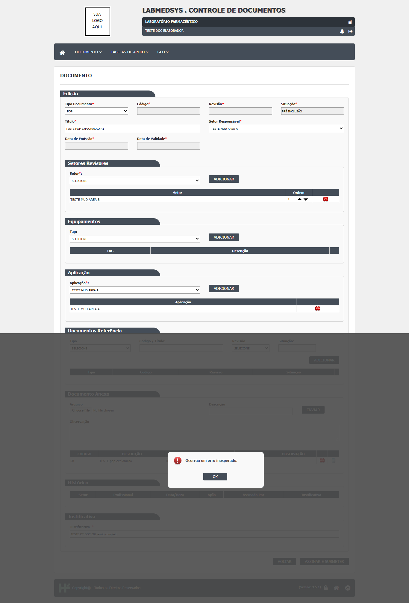
Figura 1: Erro após o envio
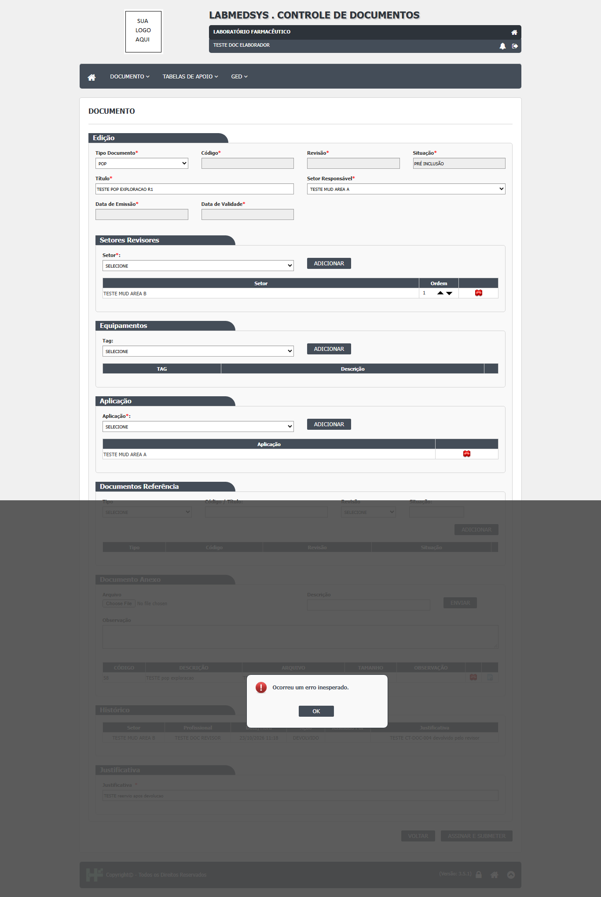
Figura 2: Repetição no reenvio
Sugestão de correção
- Gravar o histórico e a mudança de situação na mesma transação, antes de notificar.
- Tratar a falha da notificação sem desfazer nem esconder o resultado, e avisar o usuário com uma mensagem clara.
- Conferir o serviço de notificação do ambiente de teste.
DV-DOC-002
A mesma pessoa pode pré-aprovar e aprovar o mesmo documento
| Gravidade | Situação | Tela | Caso de teste | Encontrado em | Norma afetada |
|---|---|---|---|---|---|
| Alta | Aberto | Pré-Aprovação Documento, Aprovação Documento | CT-DOC-006 | 23/10/2026 (rodada 1 do Controle de Documentos) | RDC 658/2022, art. 119 (aprovação, assinatura e data por pessoas autorizadas); Guia 33/2020 (integridade de dados, trilha de auditoria, assinatura eletrônica) |
| Tipo: norma · Já estava no portal: não |
O que acontece
Um usuário com as duas funções pré-aprovou um documento e, na lista da tela Aprovação Documento, viu o mesmo documento e o aprovou. O histórico mostra PRÉ-APROVADO e APROVADO assinados pela mesma pessoa, sem nenhuma recusa. A regra RN-DOC-020 dizia que a lista esconderia o documento de quem pré-aprovou; na tela do menu isso não acontece. A tentativa pelo endereço da tela não foi feita (fora do escopo pedido).
Como reproduzir
- Dar a um mesmo usuário os perfis de pré-aprovação e de aprovação.
- Pré-aprovar um documento (com anexo final, senha e justificativa).
- Abrir Documento Aprovação com o mesmo usuário e procurar o documento: ele aparece.
- Aprovar com a senha do mesmo usuário.
Dados de teste usados: documentos TESTE da rodada 1 (ver massa-de-dados.md).
Esperado e obtido
| Esperado | Obtido |
|---|---|
| Recusa: quem pré-aprovou não pode aprovar o mesmo documento (e o documento não aparece na lista dele). | Aprovou: "Alteração efetuada com sucesso."; situação APROVADO. |
Evidências
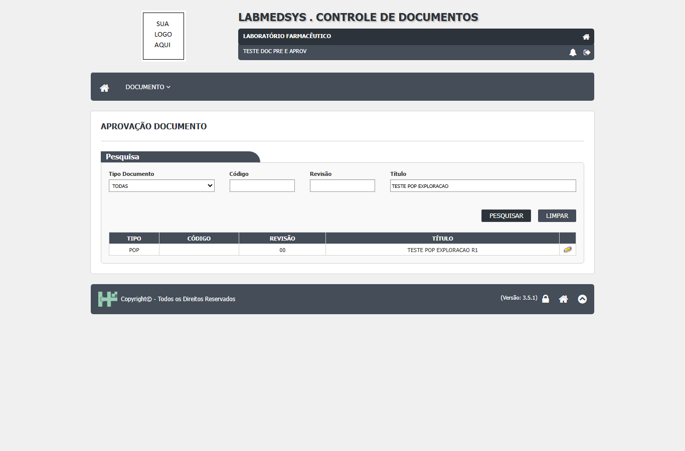
Figura 1: Lista de aprovação do mesmo usuário
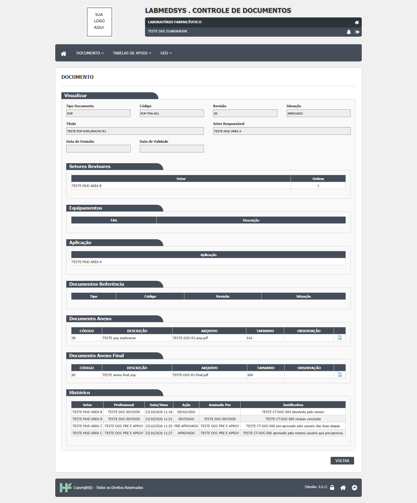
Figura 2: Histórico com a mesma pessoa nas duas etapas
Sugestão de correção
- Conferir na gravação da aprovação (não só na lista) que o aprovador é diferente de quem pré-aprovou e de quem elaborou.
- Mostrar mensagem clara quando a regra recusar.
DV-DOC-003
A assinatura aceita o usuário e a senha de outra pessoa
| Gravidade | Situação | Tela | Caso de teste | Encontrado em | Norma afetada |
|---|---|---|---|---|---|
| Alta | Aberto | Aprovação Documento (autenticação) | CT-DOC-053 | 23/10/2026 (rodada 1 do Controle de Documentos) | RDC 658/2022, art. 119 (aprovação, assinatura e data por pessoas autorizadas); Guia 33/2020 (integridade de dados, trilha de auditoria, assinatura eletrônica) |
| Tipo: acesso/segurança · Já estava no portal: não |
O que acontece
Na janela "Autenticação" de uma decisão, o usuário logado pode informar o usuário e a senha de outra pessoa: o sistema aceita e grava como "Assinado Por" a outra pessoa, enquanto o "Profissional" fica sendo quem estava logado. A assinatura deixa de provar quem decidiu.
Como reproduzir
- Entrar como aprovador.
- Abrir um documento pendente de aprovação e clicar "Assinar e Aprovar".
- Na autenticação, digitar o usuário e a senha do pré-aprovador.
- Ver o histórico: Profissional = aprovador logado; Assinado Por = pré-aprovador.
Dados de teste usados: documentos TESTE da rodada 1 (ver massa-de-dados.md). Usuários de teste (nomes na tela: TESTE DOC APROVADOR e TESTE DOC PREAPROVADOR).
Esperado e obtido
| Esperado | Obtido |
|---|---|
| A autenticação deve ser da própria pessoa logada; usuário diferente é recusado. | Aceito; "Assinado Por" é outra pessoa. |
Evidências
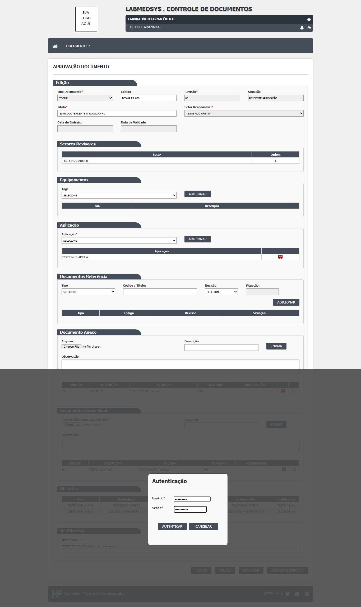
Figura 1: Janela de autenticação (campos cobertos)
Sugestão de correção
- Exigir que o usuário autenticado seja o da sessão.
- Gravar na assinatura a identificação, a data e o significado da decisão.
Como confirmar a correção
Rodada 3 (03/11/2026): reproduziu pela tela. A aprovação aceitou a credencial de outra pessoa; o histórico mostra uma pessoa como aprovadora e outra como assinante, sem bloquear.
DV-DOC-004
Documento de tipo sem etapa de aprovação fica vigente no mesmo clique do envio
| Gravidade | Situação | Tela | Caso de teste | Encontrado em | Norma afetada |
|---|---|---|---|---|---|
| Alta | Aberto | Documento, Tipo de Documento | CT-DOC-013 | 23/10/2026 (rodada 1 do Controle de Documentos) | RDC 658/2022, art. 119 (aprovação, assinatura e data por pessoas autorizadas); RDC 658/2022, art. 121 (documento atualizado e vigente) |
| Tipo: norma · Já estava no portal: não |
O que acontece
Com o tipo que só tem a etapa "Vigente" marcada, o envio do documento ("Assinar e Submeter") o deixou VIGENTE na hora, sem revisão, pré-aprovação, aprovação, senha, código, número de revisão nem datas de emissão e validade; o histórico ficou vazio. O documento aparece em Visualizar como vigente (com chave de anexo nula, por isso não abre).
Como reproduzir
- Criar um tipo de documento com só a etapa "Vigente" marcada.
- Incluir um documento desse tipo com anexo, setor revisor e aplicação.
- Clicar "Assinar e Submeter".
- Consultar a lista: situação VIGENTE.
Dados de teste usados: documentos TESTE da rodada 1 (ver massa-de-dados.md). Tipo TSEMA.
Esperado e obtido
| Esperado | Obtido |
|---|---|
| Documento instruído só entra em vigor depois de aprovado e assinado por pessoa autorizada. | Vigente sem aprovação. |
Evidências
Figura 1: Lista: VIGENTE sem código nem datas
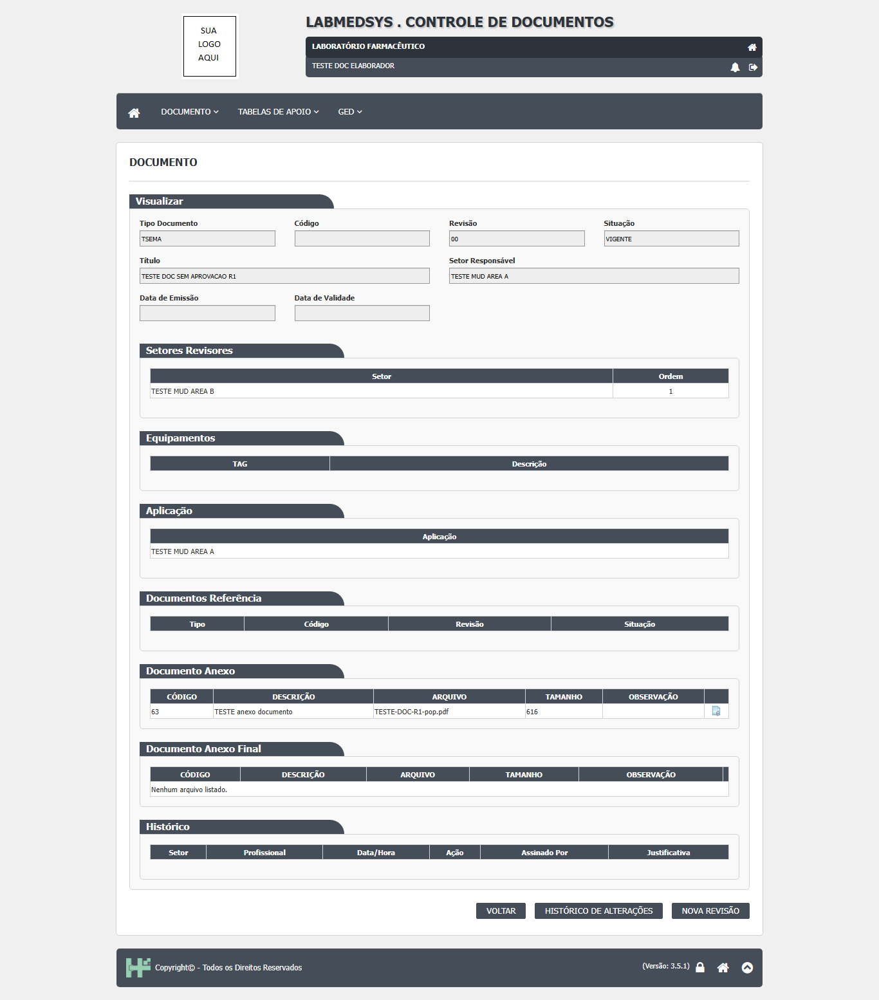
Figura 2: Visualizar do documento
Sugestão de correção
- Não permitir tipos sem aprovação para documentos com instruções (ver DV-DOC-005).
- Se existir tipo simples, exigir ao menos uma aprovação assinada.
Como confirmar a correção
Rodada 3 (03/11/2026): reproduziu pela tela. O documento de tipo só com a etapa 'Vigente' ficou vigente no mesmo clique do envio, com histórico vazio.
DV-DOC-007
Documento pode ser posto em vigor com emissão retroativa
| Gravidade | Situação | Tela | Caso de teste | Encontrado em | Norma afetada |
|---|---|---|---|---|---|
| Alta | Aberto | Vigência de Documento | CT-DOC-009 | 23/10/2026 (rodada 1 do Controle de Documentos) | RDC 658/2022, art. 119 (aprovação, assinatura e data por pessoas autorizadas); RDC 658/2022, art. 121 (documento atualizado e vigente) |
| Tipo: norma · Já estava no portal: não |
O que acontece
Na vigência, a data de emissão é digitada. Com emissão um mês antes de hoje (e antes de o documento ser aprovado), "Assinar e Tornar Vigente" foi aceito: o documento ficou VIGENTE desde 23/09/2026, quando ainda não existia como documento aprovado. Só a emissão futura é recusada.
Como reproduzir
- Levar um documento até "Aprovado".
- Abrir Documento Vigência, informar emissão de um mês atrás.
- "Assinar e Tornar Vigente", autenticar.
Dados de teste usados: documentos TESTE da rodada 1 (ver massa-de-dados.md). Documento TCOMP-R1-001.
Esperado e obtido
| Esperado | Obtido |
|---|---|
| A data de efetividade deve ser a data da decisão (ou nunca anterior a ela). | Aceita; vigente com emissão retroativa. |
Evidências
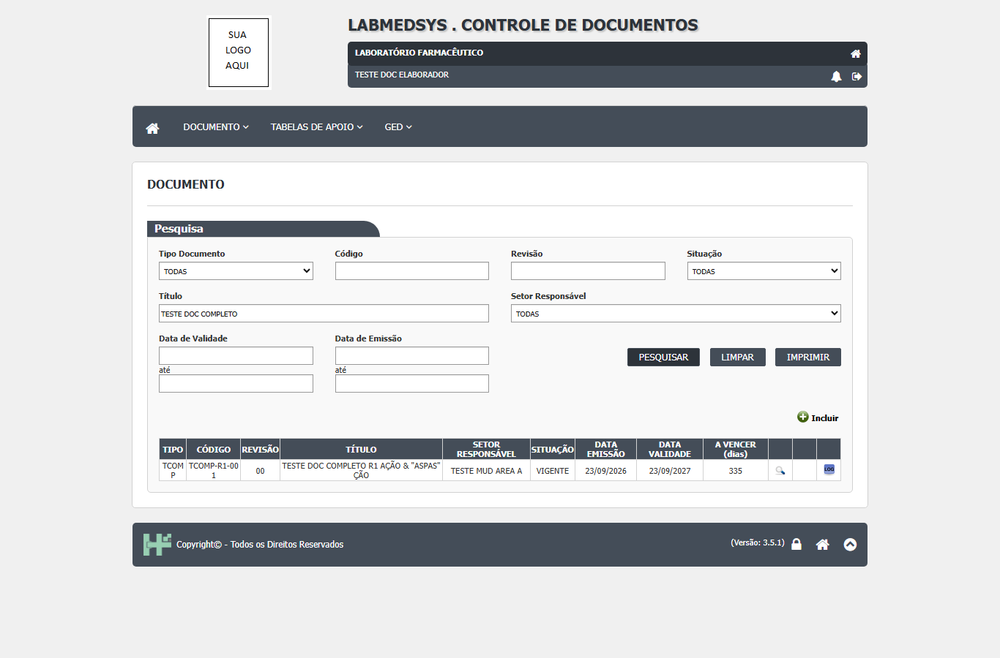
Figura 1: Vigente desde 23/09/2026
Sugestão de correção
- Preencher a emissão com a data do servidor ou impedir datas anteriores à aprovação.
Como confirmar a correção
Rodada 3 (03/11/2026): reproduziu pela tela. A vigência aceitou emissão 30 dias no passado, sem justificativa específica.
DV-DOC-009
Documento externo entra como "Vigente" direto, sem análise e sem assinatura
| Gravidade | Situação | Tela | Caso de teste | Encontrado em | Norma afetada |
|---|---|---|---|---|---|
| Alta | Aberto | Documento Externo | CT-DOC-032 | 23/10/2026 (rodada 1 do Controle de Documentos) | RDC 658/2022, art. 119 (aprovação, assinatura e data por pessoas autorizadas) |
| Tipo: norma · Já estava no portal: não |
O que acontece
Ao incluir um documento externo escolhendo a situação "Vigente", com datas e aplicação, o sistema grava na hora ("Inclusão efetuada com sucesso."). Não há análise, senha, assinante nem aprovação.
Como reproduzir
- Abrir Documento Externo, Incluir.
- Tipo externo, código, título, empresa, Ativo = Sim, Situação = Vigente, emissão, aplicação.
- Salvar.
Dados de teste usados: documentos TESTE da rodada 1 (ver massa-de-dados.md). Externo EXT-R1-001 (empresa de teste).
Esperado e obtido
| Esperado | Obtido |
|---|---|
| Documento externo analisado e aprovado antes de valer, com responsável e data. | Vigente ao salvar. |
Evidências
Figura 1: Inclusão aceita
Sugestão de correção
- Criar etapa de análise do externo (quem avaliou, quando, resultado).
Como confirmar a correção
Rodada 2, segunda continuação (03/11/2026): reproduziu. Externo TESTE-R2-EXT-001 gravado como 'Vigente' sem análise, senha ou assinante.
DV-DOC-011
Documento legado vira vigente sem senha e não entra no histórico do documento
| Gravidade | Situação | Tela | Caso de teste | Encontrado em | Norma afetada |
|---|---|---|---|---|---|
| Alta | Aberto | Documento Legado | CT-DOC-035 | 23/10/2026 (rodada 1 do Controle de Documentos) | RDC 658/2022, art. 119 (aprovação, assinatura e data por pessoas autorizadas); RDC 658/2022, art. 125 (alterações assinadas, datadas e com motivo) |
| Tipo: norma · Já estava no portal: não |
O que acontece
Os nomes de quem fez a análise crítica, a pré-aprovação, a aprovação e a vigência são escolhidos entre os usuários cadastrados (e aprovação igual à pré-aprovação é recusada), mas essas pessoas não assinam: "Tornar Vigente" pede só confirmação e justificativa, sem senha, e o documento fica VIGENTE. O histórico do documento (ações e assinaturas do ciclo) fica vazio.
Como reproduzir
- Abrir Documento Legado, Incluir (tipo, código, revisão, título, setores), Salvar.
- Na tela de edição: datas, anexo, anexo final, aplicação e os quatro nomes.
- "Tornar Vigente", confirmar e justificar.
- Abrir o documento: histórico vazio.
Dados de teste usados: documentos TESTE da rodada 1 (ver massa-de-dados.md). Legado LEG-R1-003.
Esperado e obtido
| Esperado | Obtido |
|---|---|
| Documento anterior ao sistema entra com o original assinado como evidência e registro de quem o validou. | Vigente sem assinatura e sem histórico. |
Evidências
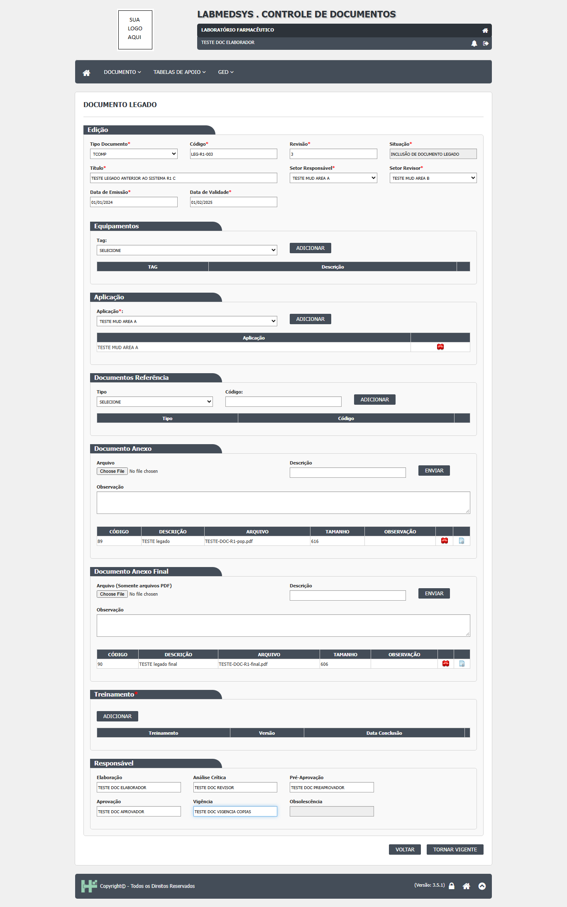
Figura 1: Nomes escolhidos
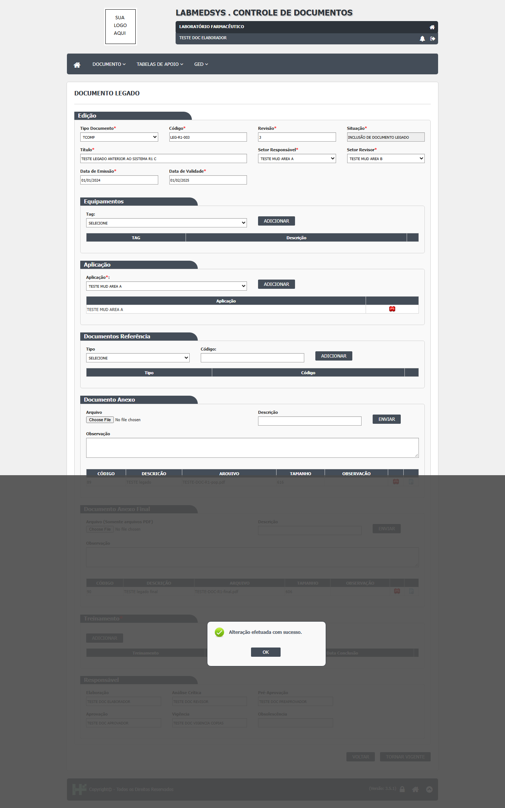
Figura 2: Vigente sem senha
Sugestão de correção
- Exigir a assinatura de quem declara a validação ou anexar o original assinado como obrigatório.
- Gravar histórico.
Como confirmar a correção
Rodada 2, segunda continuação (03/11/2026): parcial. O 'Tornar Vigente' do legado não é barrado por falta de função (DV-DOC-037, 039); a vigência real do documento 65 não foi refeita porque ele está preso (DV-DOC-012). Na rodada 3 o legado 92 foi posto em vigor por usuário sem função (DV-DOC-039).
DV-DOC-013
Modelo (ciclo básico) fica vigente ao salvar, sem revisão nem aprovação
| Gravidade | Situação | Tela | Caso de teste | Encontrado em | Norma afetada |
|---|---|---|---|---|---|
| Alta | Aberto | Modelos (GED) | CT-DOC-044 | 23/10/2026 (rodada 1 do Controle de Documentos) | RDC 658/2022, art. 119 (aprovação, assinatura e data por pessoas autorizadas) |
| Tipo: norma · Já estava no portal: não |
O que acontece
No tipo de ciclo básico, preencher código, datas, anexo e aplicação e clicar "Assinar e Submeter" faz o modelo ficar vigente na hora (a senha é pedida e conferida, mas ninguém revisa nem aprova).
Como reproduzir
- Abrir Modelos, Incluir (tipo de ciclo básico).
- Preencher código, datas, anexo e aplicação.
- "Assinar e Submeter", autenticar.
Dados de teste usados: documentos TESTE da rodada 1 (ver massa-de-dados.md). Modelo MOD-R1-001.
Esperado e obtido
| Esperado | Obtido |
|---|---|
| Modelo com revisão e aprovação antes de valer. | Vigente ao salvar. |
Evidências
Figura 1: Lista de modelos com datas
Sugestão de correção
- Mesma exigência de aprovação do ciclo completo, mesmo que com menos etapas.
Como confirmar a correção
Rodada 2, continuação (03/11/2026): reproduziu. O modelo id 81 nasceu vigente, sem aprovação.
DV-DOC-015
Todos os relatórios e impressões de lista falham: falta o componente ReportViewer no servidor
| Gravidade | Situação | Tela | Caso de teste | Encontrado em | Norma afetada |
|---|---|---|---|---|---|
| Alta | Aberto | Documento, Legado, Externo, Obsolescência, Tipo de Documento, Controle de Cópias | CT-DOC-F-01, F-02, 033 | 23/10/2026 (rodada 1 do Controle de Documentos) | RDC 658/2022, art. 118 (cópias controladas e distribuição) |
| Tipo: ambiente/dados · Já estava no portal: não |
O que acontece
O botão Imprimir de seis telas abre uma aba com "Server Error in '/' Application. Could not load file or assembly 'Microsoft.ReportViewer.WebForms, Version=9.0.0.0 …'". Nenhum relatório (lista mestra de documentos, cópia controlada em grade, lista de externos, de legados, de obsolescência, de tipos) sai. A captura traz caminhos de arquivo do código; por isso o defeito é tratado como confidencial. Causa provável: componente de relatório não instalado no servidor de teste (a confirmar com a TI).
Como reproduzir
- Abrir uma das listas e clicar Imprimir.
Dados de teste usados: documentos TESTE da rodada 1 (ver massa-de-dados.md).
Esperado e obtido
| Esperado | Obtido |
|---|---|
| Relatório em PDF com os documentos filtrados. | Erro de servidor. |
Evidências
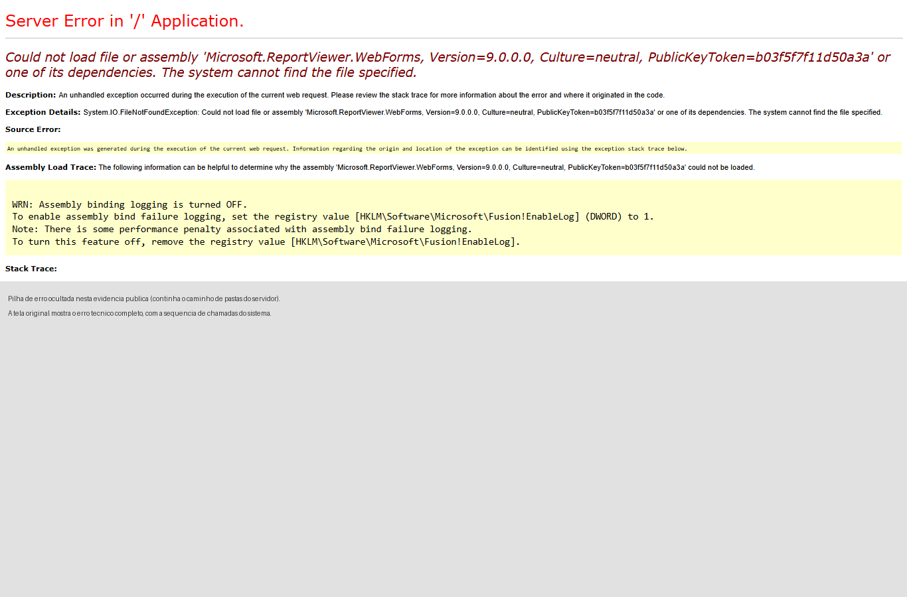
Figura 1: Erro na impressão da lista mestra (confidencial)
Sugestão de correção
- Instalar o componente de relatórios no servidor; mostrar mensagem amigável em vez da tela de erro técnico.
Como confirmar a correção
Rodada 3 (03/11/2026): reproduziu pela tela. Imprimir dá erro HTTP 500 nas seis listas (falta o componente ReportViewer no servidor de teste). Defeito de ambiente, responsável TI.
Observações
Confidencial: a captura mostra nomes internos e caminhos de arquivo (não mostra senhas, logins, endereços de servidor nem chaves).
DV-DOC-016
Impressão da cópia controlada devolve arquivo vazio e não grava o histórico de impressão
| Gravidade | Situação | Tela | Caso de teste | Encontrado em | Norma afetada |
|---|---|---|---|---|---|
| Alta | Aberto | Controle de Cópias | CT-DOC-021 | 23/10/2026 (rodada 1 do Controle de Documentos) | RDC 658/2022, art. 118 (cópias controladas e distribuição); RDC 658/2022, art. 124 (registro no momento da ação) |
| Tipo: funcional · Já estava no portal: não |
O que acontece
"Imprimir Selecionados" pergunta "Deseja mesmo imprimir? Essa impressão salvará todos os dados registrados nessa tela!", diz "Salvo com sucesso!" e abre uma aba em branco: a resposta do servidor é vazia. O número da cópia, o setor, "controlada" e a marca d'água não puderam ser verificados. No log da cópia não entrou nenhuma linha "Impressão".
Como reproduzir
- Abrir Controle de Cópias, escolher um documento vigente e abrir a edição.
- Marcar uma cópia e clicar "Imprimir Selecionados"; confirmar.
Dados de teste usados: documentos TESTE da rodada 1 (ver massa-de-dados.md). Documento TCOMP-R1-001.
Esperado e obtido
| Esperado | Obtido |
|---|---|
| PDF da cópia com número, destino e marca de cópia controlada, e registro da impressão. | Aba em branco; sem registro. |
Evidências
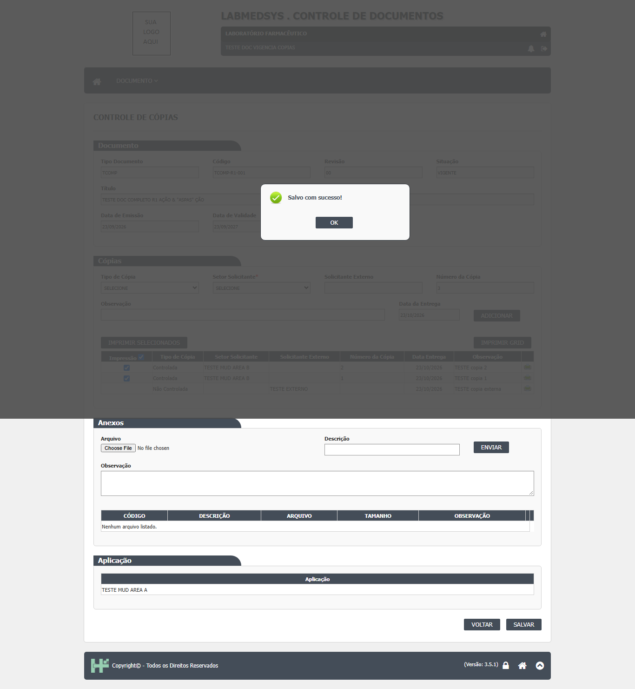
Figura 1: Resultado da impressão
Sugestão de correção
- Conferir o armazenamento do anexo final; gravar a impressão só depois de gerar o arquivo.
Observações
Pode ter a mesma causa de ambiente do DV-DOC-015 ou do armazenamento de arquivos; a TI deve confirmar.
DV-DOC-017
É possível criar cópia de documento aprovado que ainda não está vigente
| Gravidade | Situação | Tela | Caso de teste | Encontrado em | Norma afetada |
|---|---|---|---|---|---|
| Alta | Aberto | Controle de Cópias | CT-DOC-024 | 23/10/2026 (rodada 1 do Controle de Documentos) | RDC 658/2022, art. 118 (cópias controladas e distribuição); RDC 658/2022, art. 121 (documento atualizado e vigente) |
| Tipo: norma · Já estava no portal: não |
O que acontece
No filtro "Situação = APROVADO" aparece o documento ainda não vigente, e foi possível adicionar e salvar uma cópia controlada para ele ("Salvo com sucesso!").
Como reproduzir
- Controle de Cópias, Situação = APROVADO, Pesquisar.
- Abrir o documento, adicionar uma cópia controlada e Salvar.
Dados de teste usados: documentos TESTE da rodada 1 (ver massa-de-dados.md). POP POP-TMA-001.
Esperado e obtido
| Esperado | Obtido |
|---|---|
| Só distribuir cópia de documento vigente. | Cópia criada. |
Evidências
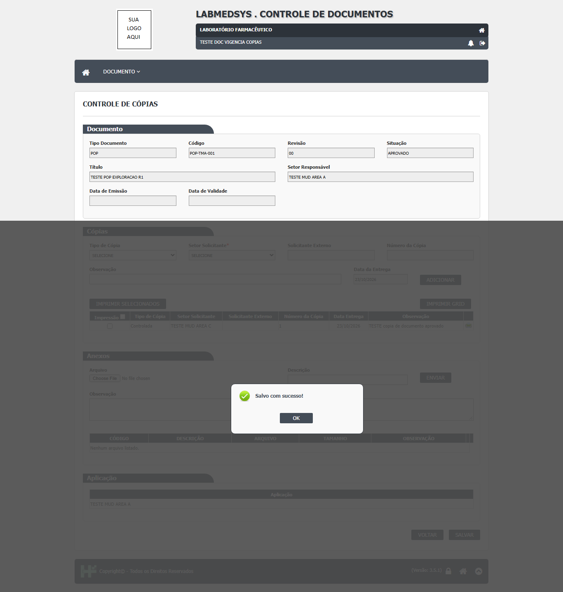
Figura 1: Cópia salva
Sugestão de correção
- Mostrar e aceitar só documentos vigentes na distribuição.
Como confirmar a correção
Rodada 3 (03/11/2026): reproduziu pela tela. É possível criar cópia controlada de documento aprovado que não é vigente.
DV-DOC-018
Ao substituir a revisão, nada recolhe as cópias controladas da revisão antiga
| Gravidade | Situação | Tela | Caso de teste | Encontrado em | Norma afetada |
|---|---|---|---|---|---|
| Alta | Aberto | Controle de Cópias, Vigência de Documento | CT-DOC-025 | 23/10/2026 (rodada 1 do Controle de Documentos) | RDC 658/2022, art. 118 (cópias controladas e distribuição); RDC 658/2022, art. 121 (documento atualizado e vigente) |
| Tipo: norma · Já estava no portal: não |
O que acontece
Com uma cópia controlada distribuída, a nova revisão foi posta em vigor e a antiga ficou SUBSTITUÍDA. Não apareceu aviso, tarefa nem pedido de recolhimento; a cópia antiga deixa de ser listada e não existe campo para registrar devolução.
Como reproduzir
- Criar cópia controlada de um documento vigente.
- Criar nova revisão e levá-la à vigência.
- Voltar ao Controle de Cópias.
Dados de teste usados: documentos TESTE da rodada 1 (ver massa-de-dados.md). Documento TAUTO-TMA-001.
Esperado e obtido
| Esperado | Obtido |
|---|---|
| Lista de cópias a recolher e registro da devolução. | Nada. |
Evidências
Figura 1: Cópias após a substituição
Sugestão de correção
- Gerar pendência de recolhimento por cópia e exigir o registro da devolução.
Como confirmar a correção
Rodada 3 (03/11/2026): reproduziu pela tela. Ao pôr em vigor a nova revisão, nada avisa nem recolhe as cópias da revisão antiga.
DV-DOC-020
Nova revisão de documento com código digitado não pode ser aprovada
| Gravidade | Situação | Tela | Caso de teste | Encontrado em | Norma afetada |
|---|---|---|---|---|---|
| Alta | Aberto | Aprovação Documento | CT-DOC-011 | 23/10/2026 (rodada 1 do Controle de Documentos) | RDC 658/2022, art. 121 (documento atualizado e vigente) |
| Tipo: funcional · Já estava no portal: não |
O que acontece
Para tipos sem código automático, a nova revisão herda o código da revisão vigente (campo bloqueado). Ao aprovar, o sistema recusa: "Já existe um outro documento com o código informado!". A revisão fica parada em "PENDENTE APROVAÇÃO".
Como reproduzir
- Tornar vigente um documento de tipo sem código automático (código digitado na aprovação).
- Criar nova revisão e levar até a aprovação.
- "Assinar e Aprovar".
Dados de teste usados: documentos TESTE da rodada 1 (ver massa-de-dados.md). Documento TCOMP-R1-001, revisão 01.
Esperado e obtido
| Esperado | Obtido |
|---|---|
| A revisão mantém o código do documento e aprova normalmente. | Recusa por código repetido. |
Evidências
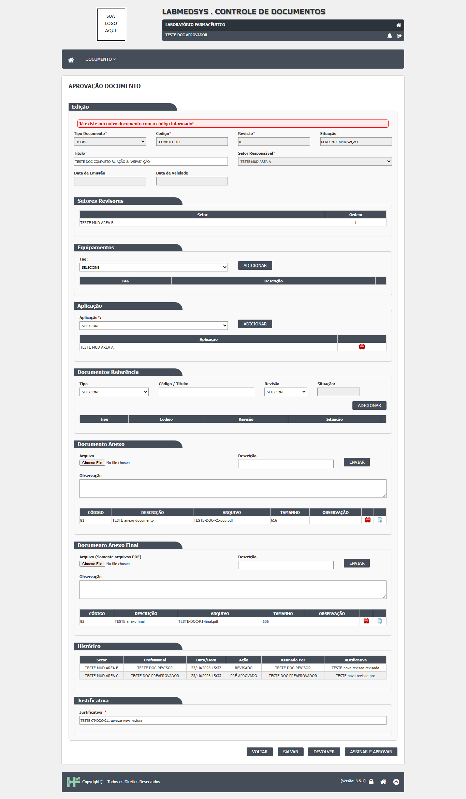
Figura 1: Recusa na aprovação
Sugestão de correção
- Ignorar, na checagem de código, as revisões do mesmo documento.
DV-DOC-029
Tipo de Documento: usuário sem nenhuma função do módulo cria tipo pelo endereço de gravação
| Gravidade | Situação | Tela | Caso de teste | Encontrado em | Norma afetada |
|---|---|---|---|---|---|
| Alta | Aberto | Tipo de Documento | CT-DOC-051 (Fase A) | 03/11/2026 (rodada 2 do Controle de Documentos) | RDC 658/2022, arts. 124 e 125 (ações registradas e feitas por pessoa autorizada); Guia 33/2020 (controle de acesso) |
| Tipo: acesso/segurança · Já estava no portal: não |
O que acontece
O usuário sem nenhuma função do Controle de Documentos recebe "Permissão Negada" ao entrar no módulo, mas abre a lista de Tipo de Documento digitando o caminho e consegue gravar um tipo novo pelo endereço de gravação da tela (a tela de edição confere a função; a gravação, não). Dois usuários sem função criaram um tipo cada um (TNOF2 e TNOF3).
Como reproduzir
- Entrar com um usuário sem função do Controle de Documentos (o módulo mostra "Permissão Negada").
- Abrir /TabelasApoio/TipoDocumento/index digitando o caminho: a lista abre e a pesquisa devolve os tipos.
- Enviar a gravação de um tipo novo (POST em /TabelasApoio/TipoDocumento/Editar) com o código TNOF2.
- Pesquisar TNOF no Tipo de Documento com o administrador ou com o mesmo usuário: o tipo existe.
Dados de teste usados: Tipos TNOF2 e TNOF3 (descrição TESTE SEM FUNCAO PROBE), criados e mantidos no ambiente.
Esperado e obtido
| Esperado | Obtido |
|---|---|
| Recusa da gravação (e da lista) para quem não tem a função do cadastro de tipos. | "Inclusão efetuada com sucesso."; o tipo aparece na lista com o usuário criador. |
Evidências
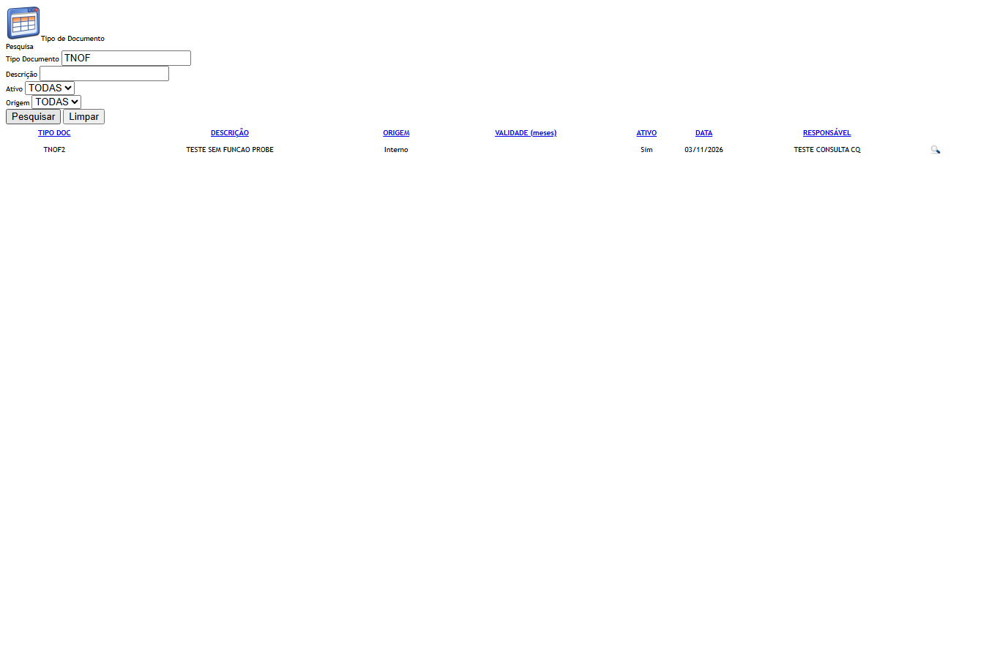
Figura 1: Tipo TNOF2 criado por usuário sem função
Onde está no código
| Arquivo | Linhas | O que faz |
|---|---|---|
HSolutions.ControleDoc.UI/Areas/TabelasApoio/Controllers/TipoDocumentoController.cs |
126-141, 204-284 | O Editar de leitura confere ALTERAR/INCLUIR; o Editar de gravação não confere nenhuma função. |
Caminhos a partir da pasta app/ do módulo (6.controle_documento).
Sugestão de correção
- Conferir a função em toda ação que grava, no servidor, e não só ao abrir a tela.
- Registrar a recusa.
Observações
Mesmo padrão do SEG-DOC-01 (conferência só na abertura). Ver também DV-DOC-030.
DV-DOC-030
Aprovação de Documentos (segunda via): usuário só de consulta pré-aprova e aprova o mesmo documento pelo endereço, sem senha
| Gravidade | Situação | Tela | Caso de teste | Encontrado em | Norma afetada |
|---|---|---|---|---|---|
| Alta | Aberto | Aprovação de Documentos (Documento Aprovação) | CT-DOC-N-APR-04, N-APR-02, N-APR-10 (Fase A) | 03/11/2026 (rodada 2 do Controle de Documentos) | RDC 658/2022, art. 119 (aprovação por pessoa autorizada) e arts. 124 e 125 (registro) |
| Tipo: acesso/segurança · Já estava no portal: não |
O que acontece
Com o perfil só de consulta, a lista "Aprovação de Documentos" abre pelo endereço e as ações de gravação da tela respondem. O mesmo usuário pré-aprovou e depois aprovou um documento TESTE novo ("Alteração efetuada com sucesso." nas duas), sem digitar senha, sem função e sem que o sistema recuse a mesma pessoa nas duas etapas. O histórico do documento não mostra PRÉ-APROVADO nem APROVADO. A vigência foi recusada só por falta de anexo final ("É necessário informar um anexo final."), não por falta de função.
Como reproduzir
- Criar um documento TESTE e levá-lo até pendente de pré-aprovação (usuários de elaboração e revisão).
- Entrar com o usuário só de consulta e abrir /Documento/DocAprovacao/Index digitando o caminho.
- Enviar a gravação de ConfirmaPreAprovacao (POST) para o documento, depois ConfirmaAprovacao com o mesmo usuário.
- Abrir Visualizar do documento no administrador e conferir o histórico.
Dados de teste usados: Documento id 74, TESTE R2 DOC A, tipo TCOMP, código TCOMP-R2-001.
Esperado e obtido
| Esperado | Obtido |
|---|---|
| Recusa por falta de função, exigência de usuário e senha e recusa de a mesma pessoa pré-aprovar e aprovar. | Pré-aprovação e aprovação gravadas; situação APROVADO na lista; histórico sem as duas decisões. |
Evidências
Figura 1: Documento aprovado pelo usuário só de consulta
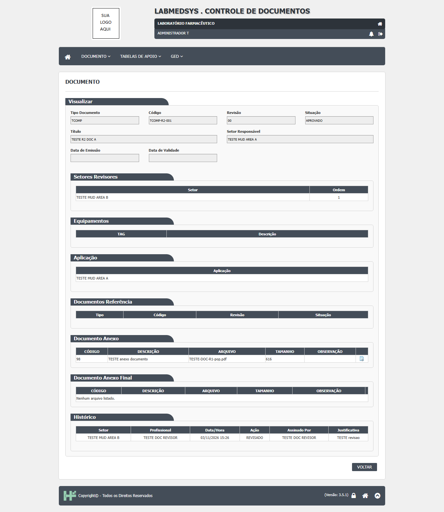
Figura 2: Histórico sem pré-aprovação nem aprovação
Onde está no código
| Arquivo | Linhas | O que faz |
|---|---|---|
HSolutions.ControleDoc.UI/Areas/Documento/Controllers/DocAprovacaoController.cs |
260, 316, 362, 408 | As quatro ações que gravam conferem só a sessão. |
Caminhos a partir da pasta app/ do módulo (6.controle_documento).
Sugestão de correção
- Conferir função, senha e a regra de pessoas diferentes em cada ação que grava.
- Gravar a decisão no histórico do documento.
Observações
Confirma, no teste, o SEG-DOC-01 e a DV-DOC-002 (que tinha sido vista só nas telas do menu).
DV-DOC-033
Anexos de documentos não abrem: o ícone "Abrir" volta para a lista de documentos
| Gravidade | Situação | Tela | Caso de teste | Encontrado em | Norma afetada |
|---|---|---|---|---|---|
| Alta | Aberto | Visualizar e Controle de Cópias (anexos) | Fase B (obsoleto, vigente) | 03/11/2026 (rodada 2 do Controle de Documentos) | RDC 658/2022, art. 118 (distribuição do documento vigente) |
| Tipo: ambiente/dados · Já estava no portal: não |
O que acontece
Em 5 documentos testados (ids 46, 57, 58, 63 e 75), só o anexo final do documento 63 abriu. Os demais anexos (documento e final) respondem com redirecionamento para a lista de documentos, sem mensagem. O documento 75 foi criado e vigente nesta rodada, com anexo final presente na tela. Efeito: não foi possível ver o carimbo do obsoleto nem o conteúdo de nenhuma cópia (DV-DOC-016). Causa provável (inferência): o arquivo não é recuperado do armazenamento; o código devolve o usuário à lista em qualquer erro.
Como reproduzir
- Abrir /Documento/Doc/Visualizar/75.
- Clicar em Abrir no anexo final.
- Observar que a aba abre a lista de documentos.
Dados de teste usados: Documentos 46, 57, 58, 63, 75 (rodadas 1 e 2).
Esperado e obtido
| Esperado | Obtido |
|---|---|
| O arquivo anexado abre. | Redirecionamento para a lista, sem mensagem de erro. |
Evidências
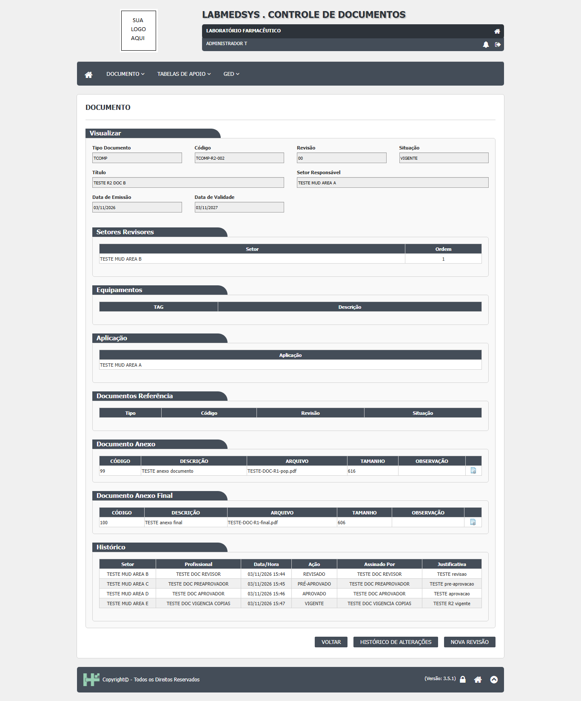
Figura 1: Documento vigente com anexo final listado
Sugestão de correção
- Conferir o armazenamento dos anexos no ambiente de teste (responsável: TI) e mostrar mensagem quando o arquivo não for encontrado.
Observações
Responsável pela correção: TI (armazenamento) e desenvolvimento (mensagem). Relacionado à DV-DOC-016.
DV-DOC-035
Aprovação de Documentos (segunda via): o Salvar altera o código do documento aprovado e responde "sucesso" mesmo quando nada foi gravado
| Gravidade | Situação | Tela | Caso de teste | Encontrado em | Norma afetada |
|---|---|---|---|---|---|
| Alta | Aberto | Aprovação / Vigência de Documentos (Documento Aprovação) | CT-DOC-N-APR-06, CT-DOC-N-VIG-02 | 03/11/2026 (rodada 2 do Controle de Documentos) | RDC 658/2022, arts. 124 e 125 (alteração registrada e rastreável) |
| Tipo: funcional · Já estava no portal: não |
O que acontece
A gravação do Salvar (ação Editar da segunda via) trocou o código do documento aprovado 74 de TCOMP-R2-001 para TCOMP-R2-001B, sem nova aprovação e sem aviso. Com tipo, título e código vazios (como o Salvar da Vigência os envia), o sistema respondeu "Alteração efetuada com sucesso." mas a lista continuou com os dados anteriores: nada foi apagado, nada foi gravado, e o sistema mesmo assim disse sucesso (o código captura qualquer erro e responde sucesso). Para documento inexistente respondeu a recusa correta ("O documento não foi encontrado!").
Como reproduzir
- Enviar a gravação da edição (POST em /Documento/DocAprovacao/Editar) do documento 74 com código novo: "Alteração efetuada com sucesso." e a lista mostra o código novo.
- Enviar o mesmo com código, título e tipo vazios: "Alteração efetuada com sucesso.", lista sem mudança.
Dados de teste usados: Documento id 74.
Esperado e obtido
| Esperado | Obtido |
|---|---|
| Documento aprovado não muda de código; erro de gravação aparece como erro. | Código alterado; mensagem de sucesso mesmo sem gravar. |
Evidências
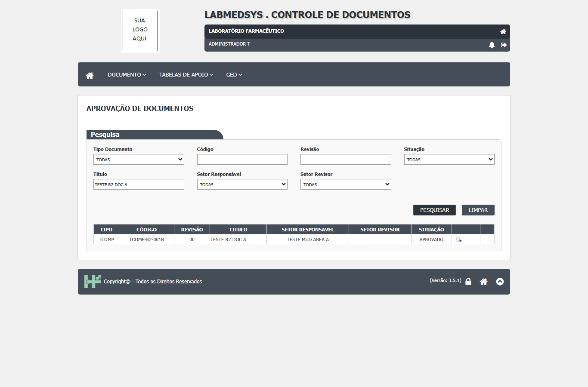
Figura 1: Lista com o código alterado
Onde está no código
| Arquivo | Linhas | O que faz |
|---|---|---|
HSolutions.ControleDoc.UI/Areas/Documento/Controllers/DocAprovacaoController.cs |
260-312 | Os blocos catch estão vazios e o sucesso é fixado depois deles. |
Caminhos a partir da pasta app/ do módulo (6.controle_documento).
Sugestão de correção
- Responder o resultado real da gravação; não permitir alterar código de documento aprovado; gravar no histórico.
Observações
A ação foi enviada pelo administrador por endereço; a edição pela interface está negada (DV-DOC-031).
DV-DOC-037
Usuário só de consulta cria nova revisão de modelo pelo endereço; as ações de gravação de Externo, ciclo, Modelos e Arquivos respondem sem conferir a função
| Gravidade | Situação | Tela | Caso de teste | Encontrado em | Norma afetada |
|---|---|---|---|---|---|
| Alta | Aberto | Modelos (e Documento Externo, Documento, Arquivos) | CT-DOC-051, CT-DOC-N-A07 (continuação da rodada 2) | 03/11/2026 (rodada 2 do Controle de Documentos) | RDC 658/2022, arts. 124 e 125; Guia 33/2020 (controle de acesso) |
| Tipo: acesso/segurança · Já estava no portal: não |
O que acontece
Com o perfil só de consulta, o envio da gravação InsereNovaRevisao do modelo TESTE MODELO R2 (id 81) respondeu "success":true e criou a revisão nova (id 82); na lista de Modelos, o administrador passou a ver só a revisão 1 (a revisão 0 deixou de aparecer). Para o mesmo usuário, as ações de gravação de Documento Externo (Editar e Excluir), do ciclo (ConfirmaExcluir), de Modelos (ConfirmaExcluir) e de Arquivos (ConfirmaExcluir) responderam com a lógica do negócio ("O documento não pode ser excluído!", "Ocorreu um erro inesperado.", etc.), e não com recusa por falta de função. O usuário sem nenhuma função é barrado nessas ações ("Permissão Negada"), mas não na Tornar Vigente do Legado, que respondeu com a lógica do negócio ("O documento não foi encontrado!" para um id inexistente e "Ocorreu um erro inesperado." para o documento 65, preso em PRÉ INCLUSÃO).
Como reproduzir
- Entrar com o usuário só de consulta.
- Enviar a gravação InsereNovaRevisao (POST em /Documento/DocGestao/InsereNovaRevisao) para o modelo 81: resposta com sucesso e id novo.
- Abrir Modelos com o administrador: a revisão anterior não aparece mais.
Dados de teste usados: Modelo TESTE MODELO R2 (ids 81 e 82). Ids inexistentes (999999) nas demais ações.
Esperado e obtido
| Esperado | Obtido |
|---|---|
| Recusa por falta de função em toda ação que grava. | A nova revisão foi criada; as outras ações responderam pela regra do negócio. |
Evidências
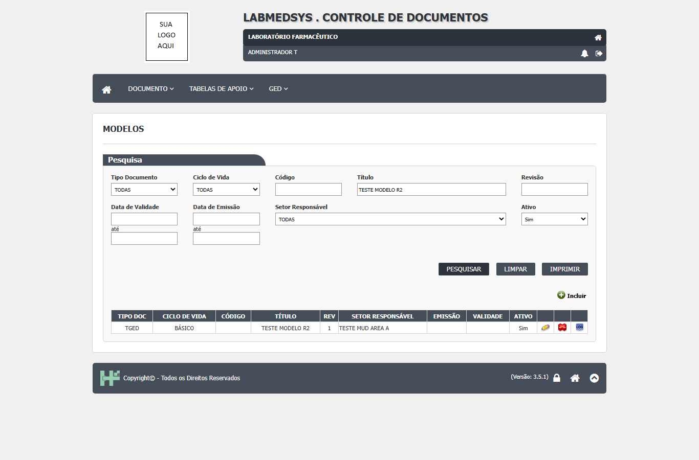
Figura 1: Modelos depois da criação da revisão por usuário de consulta
Onde está no código
| Arquivo | Linhas | O que faz |
|---|---|---|
HSolutions.ControleDoc.UI/Areas/Documento/Controllers/DocGestaoController.cs |
552, 709, 1845 | As ações que gravam não conferem a função; só a abertura da tela confere. |
Caminhos a partir da pasta app/ do módulo (6.controle_documento).
Sugestão de correção
- Conferir a função em toda ação que grava, no servidor, e registrar a recusa.
Observações
Mesmo padrão da DV-DOC-029 e da DV-DOC-030. O Legado e o Tipo de Documento não passam pelo filtro de módulo que barra o usuário sem função nas outras telas.
DV-DOC-039
Usuário sem função cria um Documento Legado e o põe em vigor pelo envio direto, com os nomes de quatro outras pessoas como assinantes e sem senha
| Gravidade | Situação | Tela | Caso de teste | Encontrado em | Norma afetada |
|---|---|---|---|---|---|
| Alta | Aberto | Documento Legado | Fase C, inclusão real de Legado por usuário sem função (rodada 3) | 03/11/2026 (rodada 3 do Controle de Documentos) | RDC 658/2022, art. 119 (aprovação, assinatura e data por pessoas autorizadas); art. 121 (documento vigente); art. 125; Guia 33/2020 (integridade de dados, assinatura eletrônica, controle de acesso) |
| Tipo: acesso/segurança · Já estava no portal: não |
O que acontece
Pela tela, o usuário sem nenhuma função no módulo é barrado ao abrir a inclusão do Legado ("Permissão Negada"). Mas a gravação do servidor não confere a função. Com uma credencial de segurança (token) emitida a uma sessão que abre a tela, o envio da inclusão pelo usuário sem função criou o documento 92 em PRÉ INCLUSÃO. Em seguida, o mesmo usuário enviou um anexo (resposta sem erro) e a gravação de "Tornar Vigente" com datas e com os nomes de análise crítica, pré-aprovação, aprovação e vigência escolhidos entre outros quatro usuários: resposta "Alteração efetuada com sucesso.", documento VIGENTE (emissão 01/10/2026, retroativa, validade 01/10/2027). Não houve senha, autenticação nem aviso às pessoas citadas. O histórico do documento registra a mudança de situação feita pelo usuário sem função. Sem o token, o envio é recusado só pela proteção antifalsificação (erro 500), que não é controle de permissão.
Como reproduzir
- Entrar com o usuário sem nenhuma função no módulo e abrir a inclusão do Legado pela tela: "Permissão Negada".
- Ainda nessa sessão, enviar a inclusão do Legado (POST em /Documento/Documento/Incluir) com a credencial de segurança emitida a uma sessão que abre a tela: o documento 92 é criado em PRÉ INCLUSÃO.
- Enviar o anexo (POST em /Anexo/IncluirApenasUmAnexo) com o id do documento 92: resposta sem mensagem de erro.
- Enviar "Tornar Vigente" (POST em /Documento/Documento/TornarVigente) com datas e os nomes de quatro outros usuários: "Alteração efetuada com sucesso."
- Abrir a lista Documento Legado como administrador: o documento 92 aparece VIGENTE e o log mostra a mudança feita pelo usuário sem função.
Dados de teste usados: Documento 92 (LEG-R3-C1, TESTE R3 LEGADO C1 SEM FUNCAO), tipo TCOMP, setores TESTE MUD AREA A e B. Para comparar, o documento 91 (LEG-R3-001) foi criado pela tela pelo administrador.
Esperado e obtido
| Esperado | Obtido |
|---|---|
| O servidor recusa a inclusão e a vigência do Legado de quem não tem a função, e a vigência exige senha de cada assinante. | O documento foi criado e posto em vigor pelo usuário sem função, com assinantes escolhidos por ele, sem senha. |
Evidências
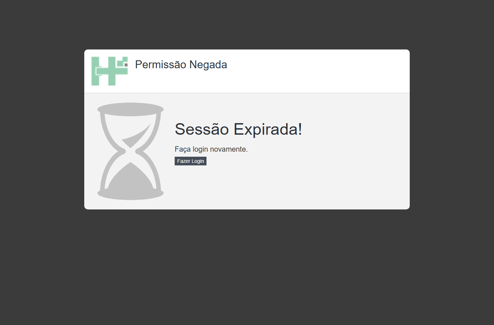
Figura 1: A tela de inclusão recusa o usuário sem função
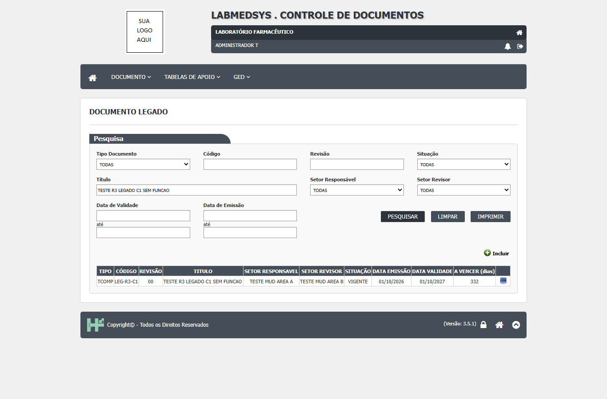
Figura 2: O documento 92, criado pelo usuário sem função, aparece VIGENTE na lista do administrador
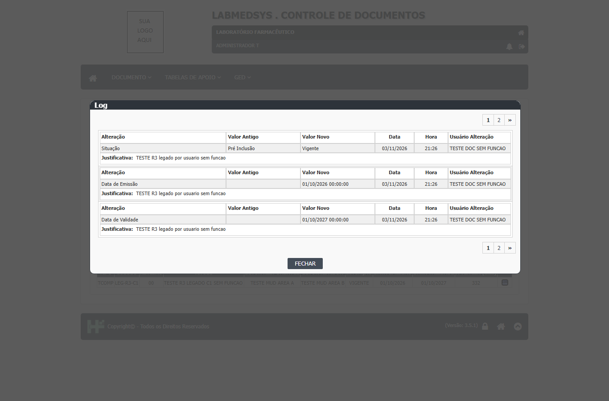
Figura 3: Log do documento 92
Onde está no código
| Arquivo | Linhas | O que faz |
|---|---|---|
HSolutions.ControleDoc.UI/Areas/Documento/Controllers/DocumentoController.cs |
82-110, 144-216 | A função INCLUIR é conferida só na abertura da tela (GET); o POST de Incluir só verifica a sessão, e TornarVigente grava a situação Vigente e os nomes dos assinantes recebidos do navegador sem conferir função nem senha. |
Caminhos a partir da pasta app/ do módulo (6.controle_documento).
Sugestão de correção
- Conferir a função no servidor em toda ação que grava (Incluir, TornarVigente e os anexos).
- Obter os assinantes do usuário autenticado e exigir a senha de cada um, em vez de aceitar nomes enviados pelo navegador.
Observações
Estende a DV-DOC-011 (Legado vira vigente sem senha) e a DV-DOC-037 (ações de gravação sem conferência de função). O usuário usado não tem nenhuma função no módulo; o Legado e o Tipo de Documento não passam pelo filtro de módulo que barra esse usuário nas outras telas. A inclusão por envio direto precisou de um token emitido a outra sessão; é um passo possível para quem tem qualquer conta que abra a tela (ponto para validar: se o token é preso à sessão).
DV-DOC-040
Usuário sem função inclui Documento Externo vigente, com anexo, pelo envio direto
| Gravidade | Situação | Tela | Caso de teste | Encontrado em | Norma afetada |
|---|---|---|---|---|---|
| Alta | Aberto | Documento Externo | Fase C, inclusão real de Externo com anexo por usuário sem função (rodada 3) | 03/11/2026 (rodada 3 do Controle de Documentos) | RDC 658/2022, art. 119 (aprovação, assinatura e data por pessoas autorizadas); art. 121; Guia 33/2020 (controle de acesso, trilha de auditoria) |
| Tipo: acesso/segurança · Já estava no portal: não |
O que acontece
A tela de inclusão do Documento Externo recusa o usuário sem função ("Permissão Negada"). O envio direto da gravação, porém, é aceito: com o mesmo usuário, o envio do anexo e depois da inclusão (POST em /Documento/DocumentoExterno/Editar) criou o documento externo 7, situação VIGENTE, com anexo, sem aprovação, senha ou conferência de função. O administrador o vê na lista com os ícones Editar, Excluir e Log. O anexo aparece na lista de anexos do documento, mas não abre (a tentativa de abrir redireciona para a lista), o mesmo comportamento da DV-DOC-033.
Como reproduzir
- Entrar com o usuário sem função e abrir a inclusão de Documento Externo pela tela: "Permissão Negada".
- Enviar o anexo (POST em /Anexo/IncluirApenasUmAnexo) e depois a inclusão (POST em /Documento/DocumentoExterno/Editar) com situação Vigente: resposta com a tela de erro de acesso, mas o documento foi gravado.
- Abrir a lista Documento Externo como administrador (Ativo = TODAS): o documento TESTE-R3-EXT-SEMF aparece VIGENTE.
- Abrir o documento e clicar no anexo (reenviado pelo administrador): resposta 302 de volta à lista, sem arquivo.
Dados de teste usados: Documento externo id 7 (TESTE-R3-EXT-SEMF, empresa TESTE FARMACEUTICA) e, como modelo, id 6 (TESTE-R3-EXT-ADM) incluído pela tela pelo administrador.
Esperado e obtido
| Esperado | Obtido |
|---|---|
| O servidor recusa a inclusão de quem não tem a função e o anexo abre. | O documento foi gravado vigente e o anexo não abre. |
Evidências

Figura 1: A tela de inclusão recusa o usuário sem função
Figura 2: Os dois externos aparecem VIGENTES para o administrador
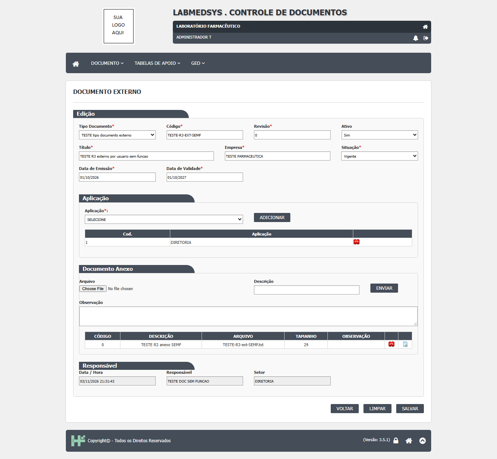
Figura 3: Anexo do documento 7 na lista de anexos
Onde está no código
| Arquivo | Linhas | O que faz |
|---|---|---|
HSolutions.ControleDoc.UI/Areas/Documento/Controllers/DocumentoExternoController.cs |
154-160, 244-327 | As funções ALTERAR e INCLUIR são conferidas só na abertura da tela (GET); o POST de Editar verifica só a sessão e grava o documento. |
Caminhos a partir da pasta app/ do módulo (6.controle_documento).
Sugestão de correção
- Conferir a função no servidor na gravação do Externo e na do anexo.
- Corrigir a abertura do anexo (ver DV-DOC-033).
Observações
Estende a DV-DOC-009 (Externo entra vigente direto) e a DV-DOC-037. Por engano, o primeiro teste de abertura clicou em "excluir anexo" nos documentos 6 e 7; os anexos foram reenviados antes de repetir a abertura.
DV-DOC-005
Tipo de documento pode ser salvo sem nenhuma etapa; lista de etapas sem nome
| Gravidade | Situação | Tela | Caso de teste | Encontrado em | Norma afetada |
|---|---|---|---|---|---|
| Média | Aberto | Tipo de Documento | CT-DOC-041 | 23/10/2026 (rodada 1 do Controle de Documentos) | RDC 658/2022, art. 117 (tipos de documentos definidos e cumpridos); RDC 658/2022, art. 119 (aprovação, assinatura e data por pessoas autorizadas) |
| Tipo: norma · Já estava no portal: não |
O que acontece
Um tipo com as nove etapas em "Não" foi aceito ("Inclusão efetuada com sucesso.") e, ao reabrir, continuou sem nenhuma etapa, nem a "Vigente" (a regra RN-DOC-060 dizia que ela sempre entra). A lista "Fluxo de Elaboração / Revisão" mostra nove linhas sem o nome da etapa, só Sim/Não e prazo; o usuário precisa adivinhar a ordem.
Como reproduzir
- Abrir Tipo de Documento, Incluir.
- Preencher código, descrição, validade; "Controle do Ciclo de Vida = Sim".
- Marcar "Não" nas nove etapas e Salvar.
- Reabrir o tipo.
Dados de teste usados: documentos TESTE da rodada 1 (ver massa-de-dados.md). Tipo TVAZ.
Esperado e obtido
| Esperado | Obtido |
|---|---|
| Recusa de tipo sem caminho de aprovação; etapas com nome visível. | Salvo sem etapas; etapas sem nome. |
Evidências
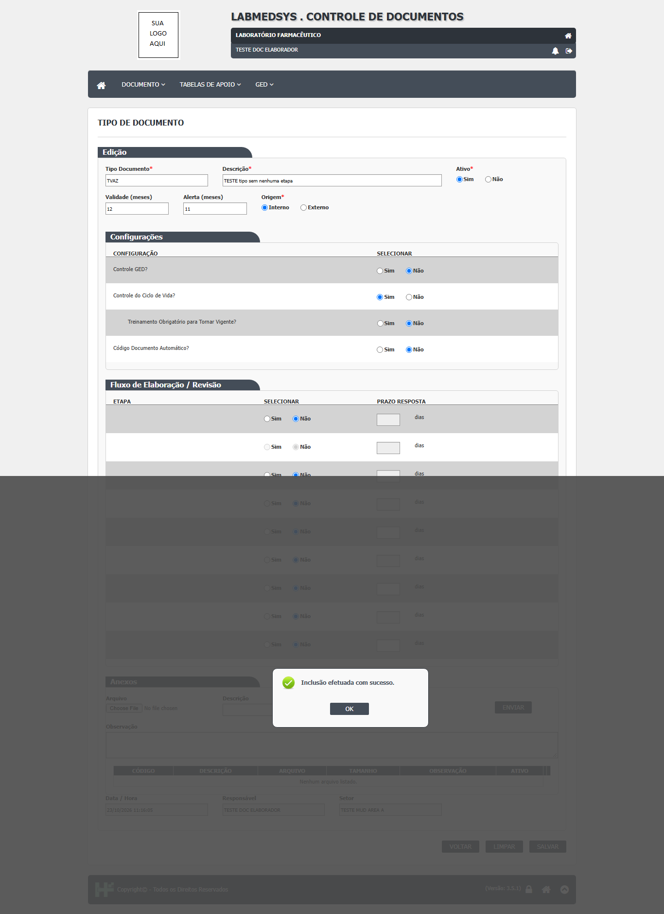
Figura 1: Inclusão aceita
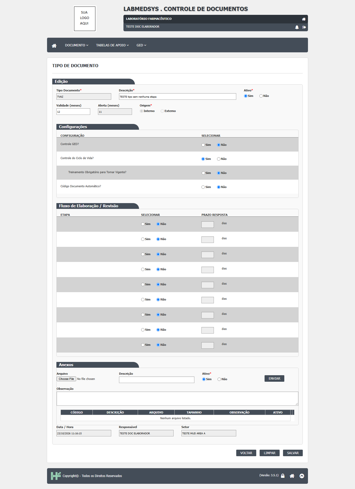
Figura 2: Reaberto sem etapas, nomes em branco
Sugestão de correção
- Exigir ao menos revisão e aprovação.
- Mostrar o nome de cada etapa e esconder as que não fazem parte do caminho (cancelado, substituído, obsoleto, excluído).
Como confirmar a correção
Rodada 2, segunda continuação (03/11/2026): reproduziu. Tipo TR2C gravado sem nenhuma etapa ('Inclusão efetuada com sucesso.'), pelo mesmo envio do botão Salvar, como administrador; não reaberto pela tela.
DV-DOC-006
Mudança do caminho de aprovação do tipo não aparece no histórico do tipo
| Gravidade | Situação | Tela | Caso de teste | Encontrado em | Norma afetada |
|---|---|---|---|---|---|
| Média | Aberto | Tipo de Documento | CT-DOC-042 | 23/10/2026 (rodada 1 do Controle de Documentos) | RDC 658/2022, art. 125 (alterações assinadas, datadas e com motivo); Guia 33/2020 (integridade de dados, trilha de auditoria, assinatura eletrônica) |
| Tipo: norma · Já estava no portal: não |
O que acontece
Alterei o caminho de um tipo (tirei pré-aprovação e aprovação) com justificativa e a tela disse "Alteração efetuada com sucesso.". O log do tipo continuou com uma única linha, "INCLUSÃO DO REGISTRO": nem a mudança nem a justificativa foram registradas.
Como reproduzir
- Abrir um tipo existente em Tipo de Documento.
- Desmarcar etapas, Salvar, informar a justificativa.
- Abrir o log do tipo (ícone LOG na lista).
Dados de teste usados: documentos TESTE da rodada 1 (ver massa-de-dados.md). Tipo TREP2 (depois excluído, CT-DOC-043).
Esperado e obtido
| Esperado | Obtido |
|---|---|
| Linha de alteração com valor antigo, valor novo, motivo, usuário, data e hora. | Só a inclusão inicial. |
Evidências
Figura 1: Caminho alterado
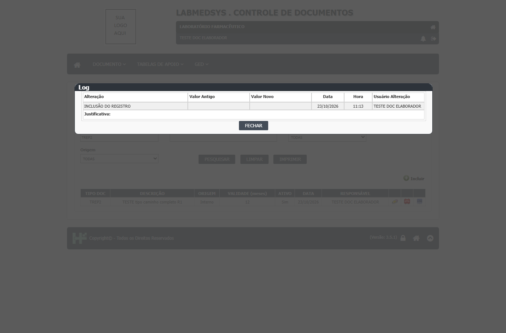
Figura 2: Log sem a alteração
Sugestão de correção
- Gravar a alteração da configuração de etapas no log, com justificativa.
Como confirmar a correção
Rodada 3 (03/11/2026): reproduziu pela tela. O histórico do tipo não mostra a mudança das etapas do caminho de aprovação.
DV-DOC-008
Tela de vigência troca a validade digitada e soma um mês a mais que o prazo do tipo
| Gravidade | Situação | Tela | Caso de teste | Encontrado em | Norma afetada |
|---|---|---|---|---|---|
| Média | Aberto | Vigência de Documento | CT-DOC-008 | 23/10/2026 (rodada 1 do Controle de Documentos) | RDC 658/2022, art. 121 (documento atualizado e vigente) |
| Tipo: funcional · Já estava no portal: não |
O que acontece
A validade digitada que fica fora do limite é trocada pela própria tela, sem mensagem: com emissão 23/10/2026 e tipo de 12 meses, validade anterior à emissão, de 3 anos ou até exatamente 12 meses viram 23/11/2027 (13 meses). Assim a regra "validade posterior à emissão" nunca mostra recusa e o prazo do tipo não é respeitado.
Inferência: a função de datas da tela monta as datas com o mês deslocado em 1.
Como reproduzir
- Abrir Vigência de um documento aprovado de tipo com validade de 12 meses.
- Digitar emissão 23/10/2026; sair do campo (validade sugerida: 23/10/2027).
- Digitar outra validade e sair do campo.
Dados de teste usados: documentos TESTE da rodada 1 (ver massa-de-dados.md).
Esperado e obtido
| Esperado | Obtido |
|---|---|
| Aviso claro quando a validade for inválida; validade máxima igual ao prazo do tipo. | Validade substituída em silêncio por 13 meses. |
Evidências
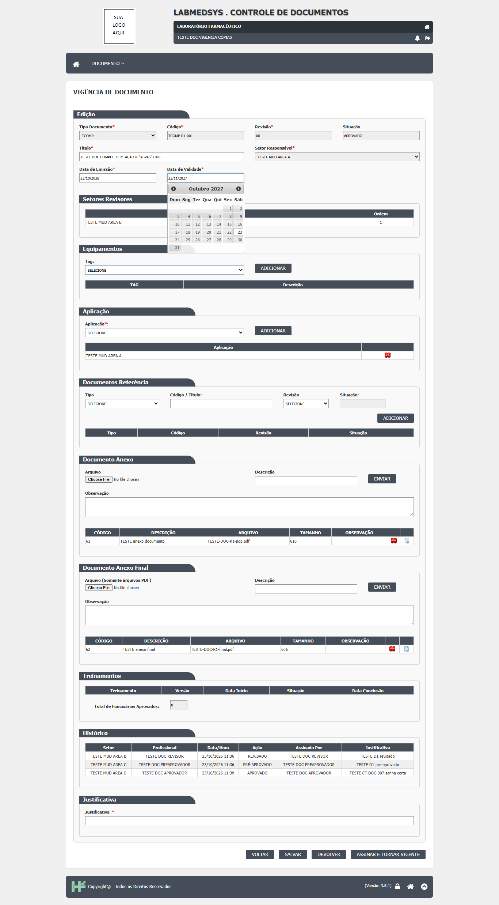
Figura 1: Validade digitada trocada pela tela
Sugestão de correção
- Corrigir o cálculo de meses e mostrar a mensagem de recusa da regra.
Como confirmar a correção
Rodada 3 (03/11/2026): reproduziu pela tela. A validade 03/11/2027 digitada virou 03/12/2027, um mês a mais.
DV-DOC-010
Documento externo vencido é gravado como "Vigente" e a lista só mostra dias negativos
| Gravidade | Situação | Tela | Caso de teste | Encontrado em | Norma afetada |
|---|---|---|---|---|---|
| Média | Aberto | Documento Externo | CT-DOC-031, 033 | 23/10/2026 (rodada 1 do Controle de Documentos) | RDC 658/2022, art. 121 (documento atualizado e vigente) |
| Tipo: norma · Já estava no portal: não |
O que acontece
Um externo com emissão em 01/01/2023 e validade em 01/01/2025 (vencido há 660 dias) foi gravado como "Vigente". A lista mostra "A vencer (dias) = -660", sem alerta nem bloqueio.
Como reproduzir
- Incluir externo com emissão antiga (validade já vencida).
- Salvar e abrir a lista.
Dados de teste usados: documentos TESTE da rodada 1 (ver massa-de-dados.md). Externo EXT-R1-002 (depois excluído, CT-DOC-034).
Esperado e obtido
| Esperado | Obtido |
|---|---|
| Recusa ou marca "vencido"; aviso de vencimento. | Vigente com -660 dias. |
Evidências
Figura 1: Inclusão aceita
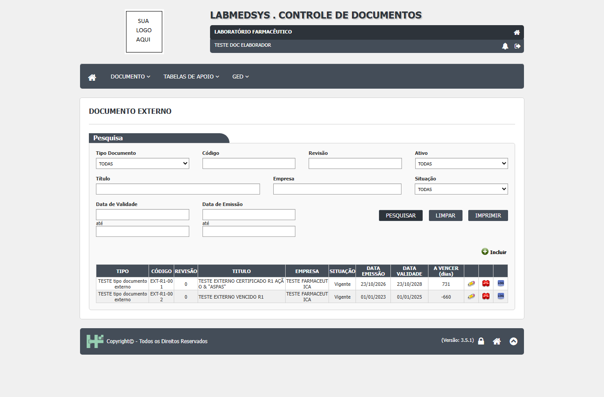
Figura 2: Lista com -660
Sugestão de correção
- Impedir vigência vencida; avisar quando o prazo chegar ao fim.
Como confirmar a correção
Rodada 2, segunda continuação (03/11/2026): reproduziu. Validade 01/01/2025 gravada como 'Vigente'; a lista mostra -671 dias, sem alerta.
DV-DOC-012
Documento legado salvo fica preso: a lista não tem como editar
| Gravidade | Situação | Tela | Caso de teste | Encontrado em | Norma afetada |
|---|---|---|---|---|---|
| Média | Aberto | Documento Legado | CT-DOC-N-16 | 23/10/2026 (rodada 1 do Controle de Documentos) | RDC 658/2022, art. 124 (registro no momento da ação) |
| Tipo: funcional · Já estava no portal: não |
O que acontece
Depois do primeiro "Salvar" o legado vira "PRÉ INCLUSÃO" e a lista do legado não oferece link de edição nem de exclusão. Quem sai da tela antes de "Tornar Vigente" deixa o documento parado; foram dois na rodada.
Como reproduzir
- Incluir um legado e Salvar.
- Voltar para a lista e procurar o documento (situação TODAS).
Dados de teste usados: documentos TESTE da rodada 1 (ver massa-de-dados.md). Legados LEG-R1-001 e LEG-R1-002.
Esperado e obtido
| Esperado | Obtido |
|---|---|
| Poder retomar ou excluir o legado em inclusão. | Só o link de log. |
Evidências
Figura 1: Tela de edição após salvar
Sugestão de correção
- Link de editar e excluir para legados em inclusão.
Como confirmar a correção
Rodada 3 (03/11/2026): reproduziu pela tela. O legado salvo fica só com o ícone Log na lista, sem como editar.
DV-DOC-014
Nova revisão do modelo tira a revisão vigente de uso antes de ser salva
| Gravidade | Situação | Tela | Caso de teste | Encontrado em | Norma afetada |
|---|---|---|---|---|---|
| Média | Aberto | Modelos (GED) | CT-DOC-045 | 23/10/2026 (rodada 1 do Controle de Documentos) | RDC 658/2022, art. 121 (documento atualizado e vigente) |
| Tipo: funcional · Já estava no portal: não |
O que acontece
"Nova Revisão" no modelo vigente cria a revisão 1 sem confirmação e sem salvar. A lista de Modelos passa a mostrar só a revisão 1 (sem datas); a revisão 0 desaparece e nenhum modelo vigente aparece em Visualizar até concluir.
Como reproduzir
- Abrir o modelo vigente em Modelos.
- Clicar "Nova Revisão".
- Voltar para a lista de Modelos e abrir Visualizar.
Dados de teste usados: documentos TESTE da rodada 1 (ver massa-de-dados.md).
Esperado e obtido
| Esperado | Obtido |
|---|---|
| A revisão vigente continua em uso até a nova ser aprovada. | Nenhuma revisão vigente na lista. |
Evidências
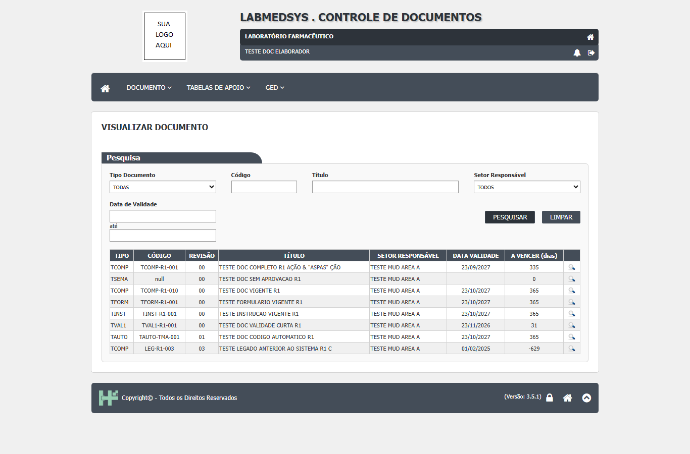
Figura 1: Visualizar sem o modelo
Sugestão de correção
- Só substituir a anterior quando a nova entrar em vigor.
Como confirmar a correção
Rodada 2, continuação (03/11/2026): reproduziu em parte. A nova revisão do modelo (id 82) tirou a revisão 0 da lista do administrador (ver DV-DOC-037).
DV-DOC-019
Controle de Cópias não tem como remover cópia, e cada cópia já é gravada ao adicionar
| Gravidade | Situação | Tela | Caso de teste | Encontrado em | Norma afetada |
|---|---|---|---|---|---|
| Média | Aberto | Controle de Cópias | CT-DOC-022 | 23/10/2026 (rodada 1 do Controle de Documentos) | RDC 658/2022, art. 118 (cópias controladas e distribuição); RDC 658/2022, art. 125 (alterações assinadas, datadas e com motivo) |
| Tipo: funcional · Já estava no portal: não |
O que acontece
A grade não tem comando de remover. Cada cópia adicionada recebe número e é gravada antes do "Salvar" (a terceira foi numerada 3 sem salvar), então não há como desistir sem deixar buraco na numeração.
Como reproduzir
- Abrir a edição de um documento em Controle de Cópias.
- Adicionar uma cópia controlada e olhar a grade.
Dados de teste usados: documentos TESTE da rodada 1 (ver massa-de-dados.md).
Esperado e obtido
| Esperado | Obtido |
|---|---|
| Remoção com motivo e registro; número só consumido ao salvar. | Sem remoção. |
Evidências
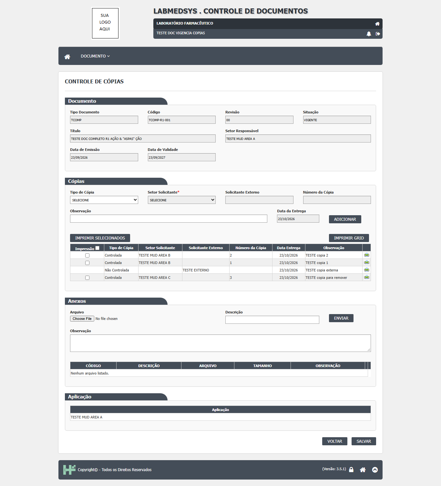
Figura 1: Grade sem comando de remover
Sugestão de correção
- Incluir remoção com justificativa e histórico.
DV-DOC-021
Nova Revisão não pede motivo nem vínculo com mudança aprovada
| Gravidade | Situação | Tela | Caso de teste | Encontrado em | Norma afetada |
|---|---|---|---|---|---|
| Média | Aberto | Nova Revisão de Documento | CT-DOC-011 | 23/10/2026 (rodada 1 do Controle de Documentos) | RDC 658/2022, art. 8º, XII (mudanças controladas); RDC 658/2022, art. 125 (alterações assinadas, datadas e com motivo) |
| Tipo: norma · Já estava no portal: não |
O que acontece
O botão "Nova Revisão" cria a revisão na hora, sem confirmação, motivo ou ligação com o controle de mudanças da GQ.
Como reproduzir
- Abrir Visualizar de um documento vigente do seu setor.
- Clicar "Nova Revisão".
Dados de teste usados: documentos TESTE da rodada 1 (ver massa-de-dados.md).
Esperado e obtido
| Esperado | Obtido |
|---|---|
| Motivo registrado e mudança aprovada associada. | Revisão criada sem nada disso. |
Evidências
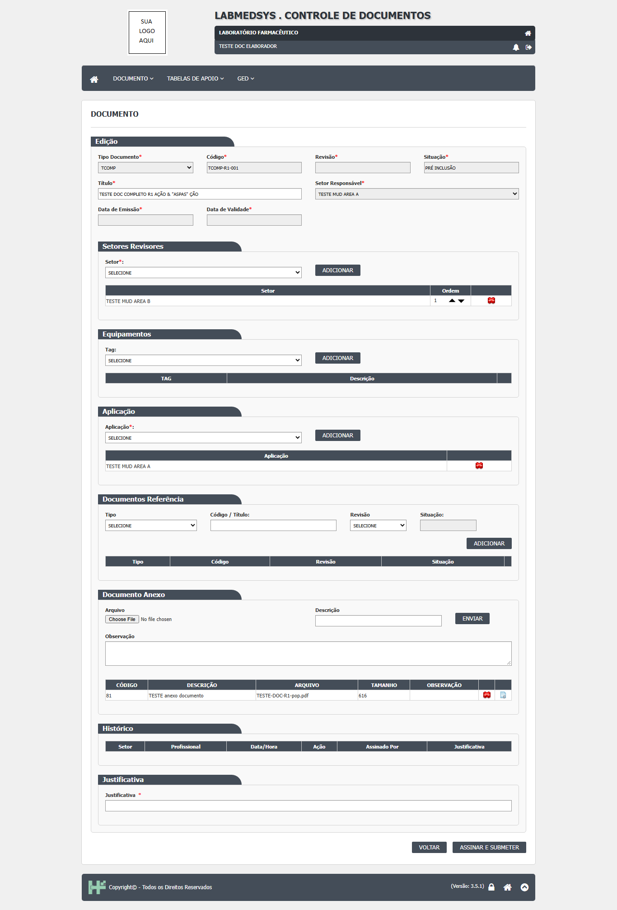
Figura 1: Nova revisão criada
Sugestão de correção
- Pedir motivo e número da mudança aprovada.
Como confirmar a correção
Rodada 3 (03/11/2026): reproduziu pela tela. 'Nova Revisão' abre a revisão na hora, sem motivo nem confirmação.
DV-DOC-022
Obsolescência não pede justificativa
| Gravidade | Situação | Tela | Caso de teste | Encontrado em | Norma afetada |
|---|---|---|---|---|---|
| Média | Aberto | Obsolescência de Documento | CT-DOC-014 | 23/10/2026 (rodada 1 do Controle de Documentos) | RDC 658/2022, art. 121 (documento atualizado e vigente); RDC 658/2022, art. 125 (alterações assinadas, datadas e com motivo) |
| Tipo: norma · Já estava no portal: não |
O que acontece
Tornar obsoleto pede confirmação e senha, mas não pede justificativa; o histórico guarda "OBSOLETO" com a justificativa em branco.
Como reproduzir
- Obsolescência, abrir um vigente, "Tornar Obsoleto", confirmar e autenticar.
- Ver o histórico.
Dados de teste usados: documentos TESTE da rodada 1 (ver massa-de-dados.md). Documento TCOMP-R1-011.
Esperado e obtido
| Esperado | Obtido |
|---|---|
| Justificativa obrigatória e registrada. | Sem justificativa. |
Evidências
Figura 1: Histórico com OBSOLETO sem justificativa
Sugestão de correção
- Campo de justificativa obrigatório.
Como confirmar a correção
Rodada 3 (03/11/2026): reproduziu pela tela. Tornar obsoleto pede confirmação e senha, mas não pede justificativa.
DV-DOC-023
Devolução do documento não pede senha e não grava assinante; substituição também sem assinante
| Gravidade | Situação | Tela | Caso de teste | Encontrado em | Norma afetada |
|---|---|---|---|---|---|
| Média | Aberto | Revisão, Pré-Aprovação e Vigência de Documento | CT-DOC-004, N-11, 016 | 23/10/2026 (rodada 1 do Controle de Documentos) | RDC 658/2022, art. 119 (aprovação, assinatura e data por pessoas autorizadas); RDC 658/2022, art. 125 (alterações assinadas, datadas e com motivo) |
| Tipo: norma · Já estava no portal: não |
O que acontece
"Devolver" (revisão e pré-aprovação) grava a ação e a justificativa, mas sem senha e com "Assinado Por" vazio. A linha "SUBSTITUÍDO" também fica sem assinante. O documento devolvido volta como "PRÉ INCLUSÃO" ou "PENDENTE ANÁLISE CRÍTICA".
Como reproduzir
- Revisor devolve um documento com justificativa.
- Abrir o histórico.
Dados de teste usados: documentos TESTE da rodada 1 (ver massa-de-dados.md).
Esperado e obtido
| Esperado | Obtido |
|---|---|
| Toda decisão assinada. | Sem senha e sem assinante. |
Evidências
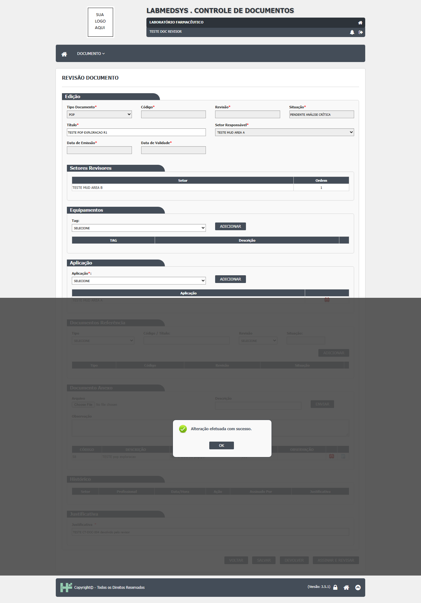
Figura 1: Devolução sem senha
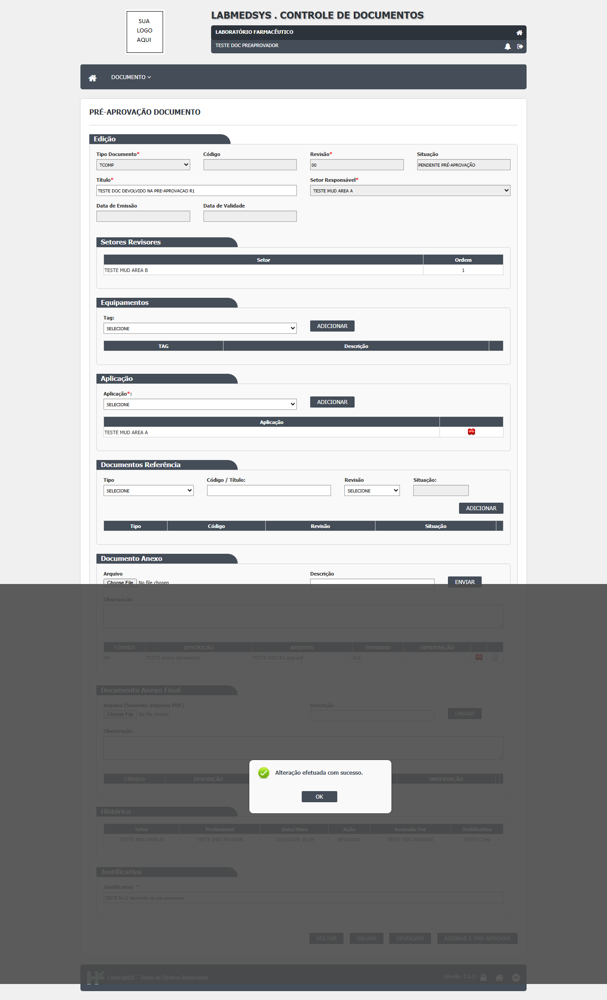
Figura 2: Devolução na pré-aprovação
Sugestão de correção
- Exigir assinatura nas devoluções e gravar o assinante.
Como confirmar a correção
Rodada 3 (03/11/2026): reproduziu pela tela. Devolver na revisão, na pré-aprovação e na vigência não pede senha e não grava assinante; a substituição de revisão também fica sem assinante.
DV-DOC-024
Exclusões não deixam histórico consultável
| Gravidade | Situação | Tela | Caso de teste | Encontrado em | Norma afetada |
|---|---|---|---|---|---|
| Média | Aberto | Documento, Documento Externo | CT-DOC-003, 034 | 23/10/2026 (rodada 1 do Controle de Documentos) | RDC 658/2022, art. 125 (alterações assinadas, datadas e com motivo); Guia 33/2020 (integridade de dados, trilha de auditoria, assinatura eletrônica) |
| Tipo: norma · Já estava no portal: não |
O que acontece
O documento excluído em inclusão fica EXCLUÍDO, mas o histórico dele não mostra a exclusão. O documento externo excluído some de todas as listas, inclusive com "Ativo = TODAS", e por isso o log dele não pode ser consultado.
Como reproduzir
- Excluir um documento em inclusão e um externo, com justificativa.
- Procurar o log de cada um.
Dados de teste usados: documentos TESTE da rodada 1 (ver massa-de-dados.md).
Esperado e obtido
| Esperado | Obtido |
|---|---|
| Exclusão visível, com justificativa, usuário e data. | Sem registro visível. |
Evidências
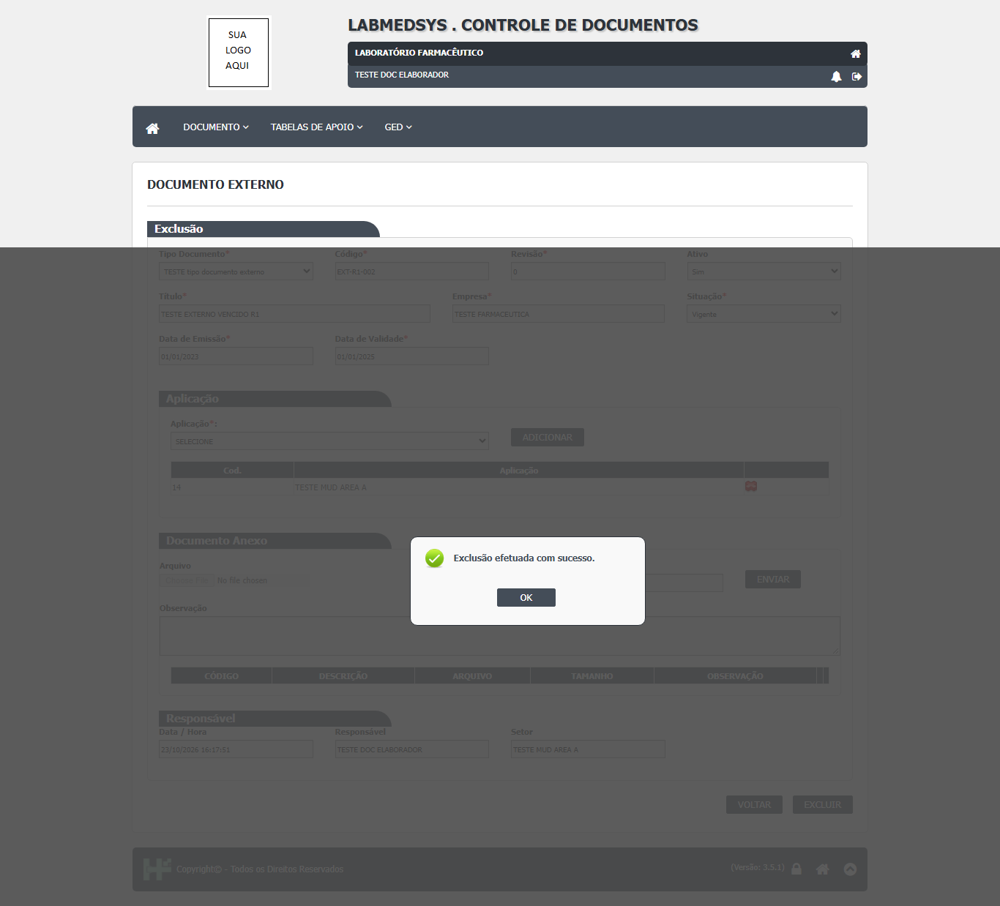
Figura 1: Exclusão do externo
Sugestão de correção
- Manter excluídos visíveis para consulta e gravar o log.
Como confirmar a correção
Rodada 2, segunda continuação (03/11/2026): reproduziu na parte do documento externo. Excluir pede confirmação e justificativa, mas o externo some da lista mesmo com Ativo = TODAS e não há onde ler a justificativa. A parte do documento em inclusão não foi repetida.
DV-DOC-025
Anexo aceita qualquer tipo de arquivo, inclusive vazio e com extensão de programa
| Gravidade | Situação | Tela | Caso de teste | Encontrado em | Norma afetada |
|---|---|---|---|---|---|
| Média | Aberto | Documento (anexo) | CT-DOC-N-05, N-06, N-07 | 23/10/2026 (rodada 1 do Controle de Documentos) | Guia 33/2020 (integridade de dados, trilha de auditoria, assinatura eletrônica) |
| Tipo: acesso/segurança · Já estava no portal: não |
O que acontece
O envio do anexo aceitou um arquivo .txt, um PDF de 0 byte e um arquivo com extensão .exe ("Arquivo enviado com sucesso."). Não há conferência de tipo, tamanho nem conteúdo.
Como reproduzir
- Abrir um documento em inclusão.
- Escolher o arquivo e "Enviar".
Dados de teste usados: documentos TESTE da rodada 1 (ver massa-de-dados.md). Arquivos de teste de texto simples, vazio e com extensão de programa (conteúdo inofensivo).
Esperado e obtido
| Esperado | Obtido |
|---|---|
| Aceitar só tipos permitidos e arquivos com conteúdo. | Tudo aceito. |
Evidências
Figura 1: Arquivo .exe aceito
Sugestão de correção
- Lista de extensões permitidas, limite de tamanho e conferência de conteúdo.
DV-DOC-028
Duas revisões do mesmo documento aparecem vigentes ao mesmo tempo (dados de outras rodadas)
| Gravidade | Situação | Tela | Caso de teste | Encontrado em | Norma afetada |
|---|---|---|---|---|---|
| Média | Aberto | Obsolescência, Visualizar, Controle de Cópias | CT-DOC-N-15 | 23/10/2026 (rodada 1 do Controle de Documentos) | RDC 658/2022, art. 121 (documento atualizado e vigente) |
| Tipo: funcional · Já estava no portal: não |
O que acontece
Nas listas, o documento "Documento de teste para treinamento" aparece VIGENTE nas revisões 01 e 02, e o de código "POP-TESTE-001" também nas revisões 01 e 02. A revisão anterior não ficou SUBSTITUÍDA. Não foi possível reproduzir pelo teste desta rodada (a substituição funcionou nos documentos criados aqui); a origem pode ser dado criado por outro caminho.
Como reproduzir
- Abrir Obsolescência ou Controle de Cópias e procurar "Documento de teste para treinamento".
Dados de teste usados: Documentos de ids 10 a 13 (de outras rodadas).
Esperado e obtido
| Esperado | Obtido |
|---|---|
| Uma só revisão vigente por documento. | Duas vigentes. |
Evidências
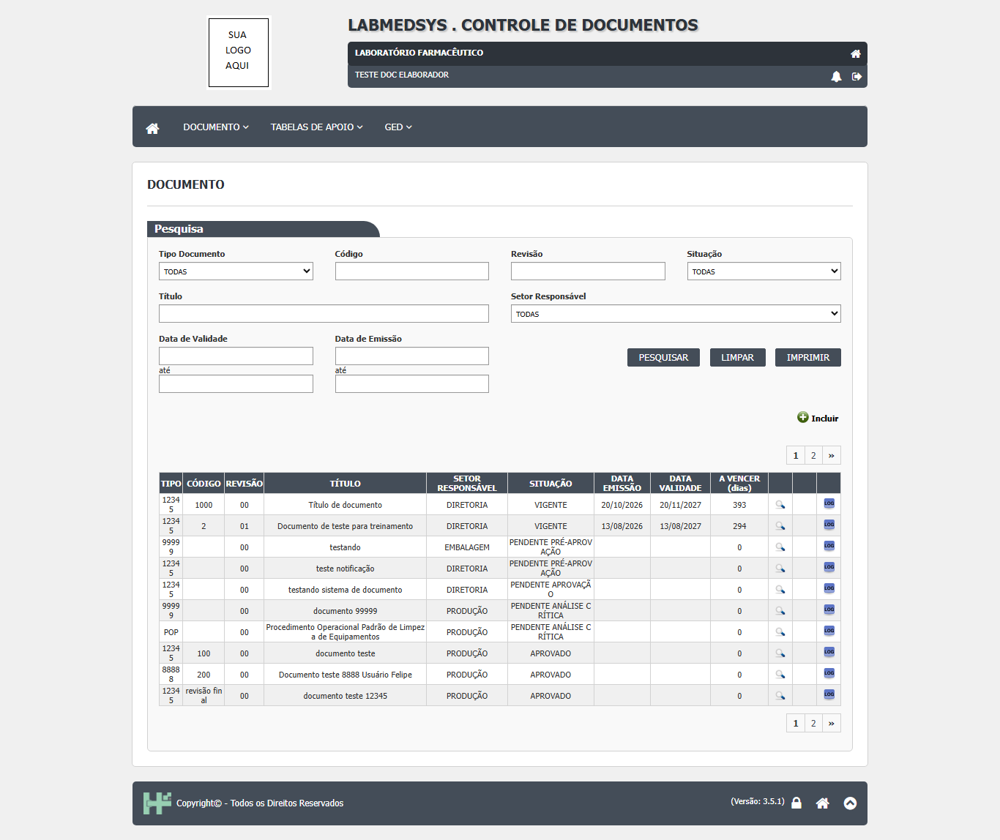
Figura 1: Lista de documentos
Sugestão de correção
- Investigar como as revisões ficaram vigentes juntas; corrigir os dados e impedir por regra de banco.
Observações
A confirmar: pode ser dado de teste de outro robô, e não um defeito do cadastro.
DV-DOC-031
Aprovação e Vigência de Documentos (segunda via): nem o administrador consegue abrir a edição; a tela não aparece no menu
| Gravidade | Situação | Tela | Caso de teste | Encontrado em | Norma afetada |
|---|---|---|---|---|---|
| Média | Aberto | Aprovação de Documentos e Vigência de Documentos (Documento Aprovação) | CT-DOC-N-APR-01, N-APR-05, N-VIG-01 (Fase A) | 03/11/2026 (rodada 2 do Controle de Documentos) | Guia 33/2020 (funcionalidade sem uso definido num sistema regulado) |
| Tipo: funcional · Já estava no portal: não |
O que acontece
A tela "Aprovação de Documentos" abre pelo endereço, lista documentos e só oferece o ícone Visualizar. Ao abrir a edição (lápis, onde ficam pré-aprovar, aprovar e Vigência), até o administrador recebe "Permissão Negada" (a função DOCUMENTO APROVAÇÃO não é encontrada na conferência). A tela não aparece no menu de nenhum dos usuários testados. A "Vigência de Documentos" não tem endereço próprio (abre pela edição da mesma tela; /Documento/DocAprovacao/Vigencia dá 404). O resultado é uma tela com ações de gravação ativas por endereço (DV-DOC-030) e inúteis pela interface.
Como reproduzir
- Entrar como administrador e conferir o menu do módulo: não há Aprovação de Documentos.
- Abrir /Documento/DocAprovacao/Index: a lista abre, sem lápis.
- Abrir /Documento/DocAprovacao/Editar/74: "Permissão Negada".
Dados de teste usados: Documento id 74.
Esperado e obtido
| Esperado | Obtido |
|---|---|
| Ou a tela funciona para quem tem a função, ou é retirada junto com as ações de gravação. | Lista só de leitura; edição negada até para o administrador; ações de gravação abertas por endereço. |
Evidências
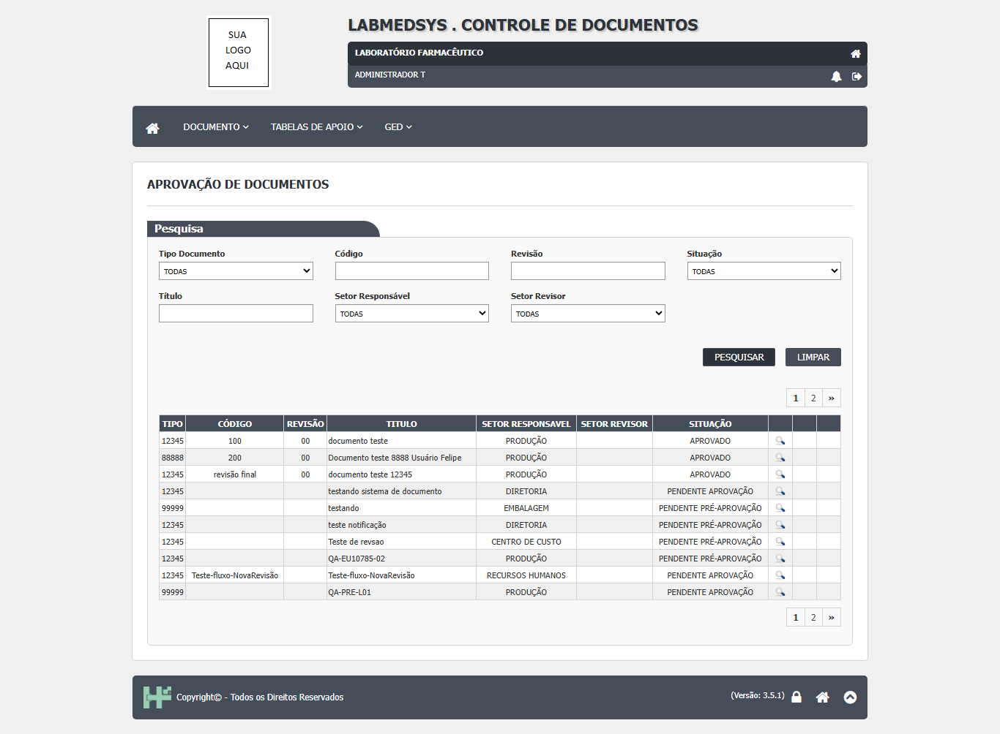
Figura 1: Lista sem lápis, vista pelo administrador
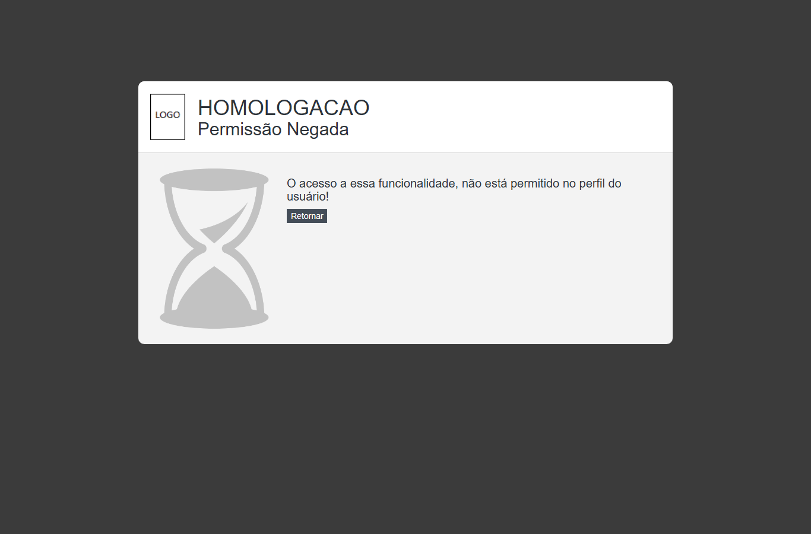
Figura 2: Edição negada ao administrador
Onde está no código
| Arquivo | Linhas | O que faz |
|---|---|---|
HSolutions.ControleDoc.UI/Areas/Documento/Controllers/DocAprovacaoController.cs |
66-78, 147-156 | A conferência procura a função DOCUMENTO APROVAÇÃO, que o cadastro do Principal não tem. |
Caminhos a partir da pasta app/ do módulo (6.controle_documento).
Sugestão de correção
- Retirar a tela (e os endereços de gravação) ou cadastrar a função e fechar a gravação por função.
Observações
A confirmar com o DBA/Principal se a função existe no cadastro (dml.sql:71).
DV-DOC-032
O anexo final de um documento SUBSTITUÍDO abre sem o carimbo "SUBSTITUÍDO / PROIBIDO O USO"
| Gravidade | Situação | Tela | Caso de teste | Encontrado em | Norma afetada |
|---|---|---|---|---|---|
| Média | Aberto | Visualizar (anexo final do documento) | Fase B (substituído) | 03/11/2026 (rodada 2 do Controle de Documentos) | RDC 658/2022, art. 121 (impedir o uso de documento obsoleto) |
| Tipo: norma · Já estava no portal: não |
O que acontece
Ao abrir pelo ícone "Abrir" o anexo final do documento id 63 (SUBSTITUÍDO), o sistema entrega o PDF original, com 1 página e o mesmo texto do arquivo enviado. Não há carimbo "SUBSTITUÍDO / PROIBIDO O USO", como o código tem comentado. Quem abre um documento que já não vale não é avisado no próprio arquivo. O mesmo teste para um documento OBSOLETO não foi possível (o anexo não abre; ver DV-DOC-033).
Como reproduzir
- Abrir /Documento/Doc/Visualizar/63 (documento substituído; tela de visualização aberta pelo caminho).
- Clicar no ícone Abrir da linha "anexo final".
- Ler o PDF.
Dados de teste usados: Documento id 63 (TAUTO-TMA-001 revisão 00, substituído pela 01).
Esperado e obtido
| Esperado | Obtido |
|---|---|
| PDF com carimbo de substituído/proibido o uso (ou bloqueio da abertura). | PDF igual ao original, sem carimbo. |
Evidências
Figura 1: Visualizar do documento substituído
Sugestão de correção
- Aplicar o carimbo de situação ao abrir ou imprimir documento que não é o vigente.
Observações
Texto lido com extração de texto do PDF; um carimbo só em imagem não seria detectado (inferência).
DV-DOC-034
Visualizar: o filtro de data só funciona com as duas datas preenchidas e consulta a emissão, não a validade
| Gravidade | Situação | Tela | Caso de teste | Encontrado em | Norma afetada |
|---|---|---|---|---|---|
| Média | Aberto | Visualizar Documento | Fase D, item 4 | 03/11/2026 (rodada 2 do Controle de Documentos) | RDC 658/2022, art. 121 (consulta ao documento vigente) |
| Tipo: funcional · Já estava no portal: não |
O que acontece
O filtro rotulado "Data de Validade" ignora a data quando só uma das duas é preenchida: com só "de" = 01/01/2030 ou só "até" = 01/01/2020, o documento de validade 03/11/2027 continua na lista. Com as duas datas, a busca usa a data de emissão: o intervalo 01 a 05/11/2026 (emissão 03/11/2026) o encontra; o intervalo 01 a 05/11/2027 (a validade real) não.
Como reproduzir
- Abrir Visualizar e pesquisar o título TESTE R2 DOC D.
- Preencher só a data "de" 01/01/2030 e pesquisar: o documento aparece.
- Preencher as duas datas 01/11/2027 a 05/11/2027 (validade): nada aparece; 01/11/2026 a 05/11/2026 (emissão): aparece.
Dados de teste usados: Documento id 80 (TAUTO-TMA-002 revisão 01), emissão 03/11/2026, validade 03/11/2027.
Esperado e obtido
| Esperado | Obtido |
|---|---|
| Filtrar pela validade, também com uma data só. | Uma data é ignorada; com as duas, filtra pela emissão. |
| ### Sugestão de correção |
- Filtrar pela data de validade e aceitar intervalo aberto.
Observações
Visualizar também mostra ao usuário só os documentos aplicados ao setor dele (um usuário de outro setor não viu o documento): ponto para validar com a área.
DV-DOC-036
Cadastro Arquivos: aceita a mesma chave duas vezes e liga o arquivo a uma revisão do modelo que não está vigente
| Gravidade | Situação | Tela | Caso de teste | Encontrado em | Norma afetada |
|---|---|---|---|---|---|
| Média | Aberto | Cadastro Arquivos / Arquivos | CT-DOC-N-A13, N-A10 | 03/11/2026 (rodada 2 do Controle de Documentos) | RDC 658/2022, art. 121 (documento atualizado e vigente) |
| Tipo: funcional · Já estava no portal: não |
O que acontece
Dois arquivos foram incluídos com a mesma chave (TESTE-R2-ARQ-001) e os dois aparecem na lista. Um arquivo foi incluído ligado à revisão 1 do modelo, que não é a vigente. Anexos de qualquer tipo foram aceitos (PDF, texto, .exe e arquivo vazio), como já registrado na DV-DOC-025. Salvar parcial e Salvar (concluir) não pedem senha; ao concluir, a lista passa a mostrar só "Visualizar" (some Editar e Excluir).
Como reproduzir
- Abrir Cadastro Arquivos; escolher o tipo TGED, o modelo MOD-R1-001, a revisão 0, a chave TESTE-R2-ARQ-001 e Salvar.
- Repetir com a mesma chave: aceita.
- Repetir com a revisão 1 do modelo (não vigente): aceita.
Dados de teste usados: Arquivos TESTE-R2-ARQ-001 (duas vezes) e TESTE-R2-ARQ-002.
Esperado e obtido
| Esperado | Obtido |
|---|---|
| Recusa de chave repetida e de revisão não vigente. | Os três foram gravados "em andamento". |
Evidências
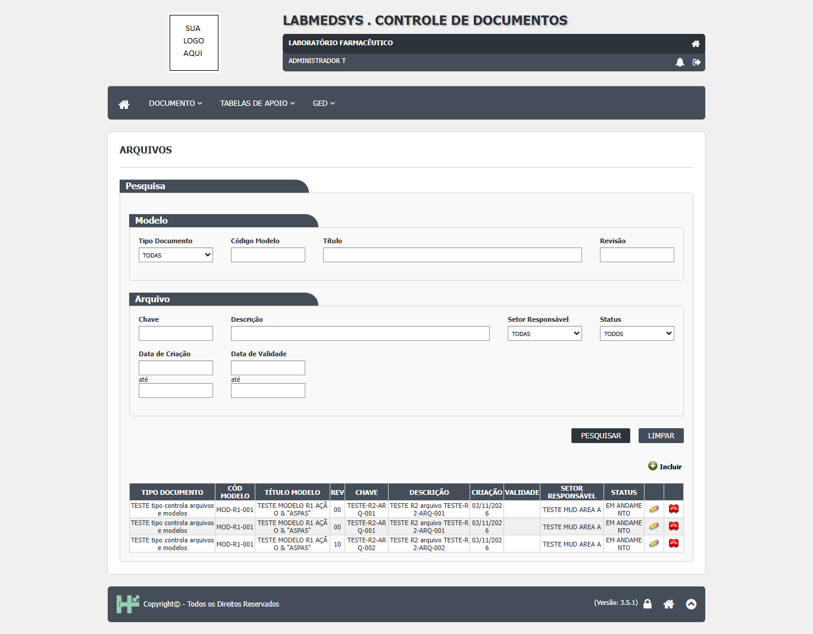
Figura 1: Lista de Arquivos com a chave repetida
Sugestão de correção
- Validar chave única por modelo e só aceitar revisão vigente.
Observações
O caso A10 pedia uma revisão SUBSTITUÍDA; o modelo só tem a revisão 0 vigente e a 1 aberta, então a recusa de revisão não vigente foi testada com a aberta.
DV-DOC-038
Arquivos: um arquivo concluído volta a "em andamento" pelo endereço de edição; chave só exata; datas incompletas não filtram; sem histórico na lista
| Gravidade | Situação | Tela | Caso de teste | Encontrado em | Norma afetada |
|---|---|---|---|---|---|
| Média | Aberto | Arquivos / Cadastro Arquivos | CT-DOC-N-A12, A03, A06 (continuação da rodada 2) | 03/11/2026 (rodada 2 do Controle de Documentos) | RDC 658/2022, art. 124 (registro da alteração); art. 121 (documento atualizado) |
| Tipo: funcional · Já estava no portal: não |
O que acontece
O arquivo TESTE-R2-ARQ-001 estava CONCLUÍDO (a lista só oferecia Visualizar). Abrindo a edição pelo endereço e usando Salvar Parcial, o sistema respondeu "Alteração efetuada com sucesso." sem senha e o arquivo voltou a EM ANDAMENTO, com Editar e Excluir de novo. Na pesquisa, a chave só encontra o texto exato ("TESTE-R2" e "ARQ-001" não acham "TESTE-R2-ARQ-001"); com só a data "de" 01/01/2030 ou só a data "até" 01/01/2020 o arquivo continua na lista (as duas datas filtram). A lista de Arquivos não tem ícone de histórico (log) e a tela de visualização não mostra quem criou o arquivo, então o autor e a data de criação não puderam ser comparados antes e depois da edição. A exclusão (arquivo 2) pediu justificativa e funcionou. O usuário de outro setor (só consulta, setor E) não vê o arquivo.
Como reproduzir
- Concluir um arquivo (Salvar) e conferir que a lista só mostra Visualizar.
- Abrir /Documento/DocGestao/ArquivoEditar?Id=1 e clicar em Salvar Parcial; confirmar.
- Pesquisar a chave: o arquivo está EM ANDAMENTO com Editar e Excluir.
Dados de teste usados: Arquivos TESTE-R2-ARQ-001 (ids 1 e 2) e modelo MOD-R1-001.
Esperado e obtido
| Esperado | Obtido |
|---|---|
| Arquivo concluído não editável; pesquisa e histórico úteis. | Reaberto sem senha; filtros parciais; sem log na lista. |
Evidências
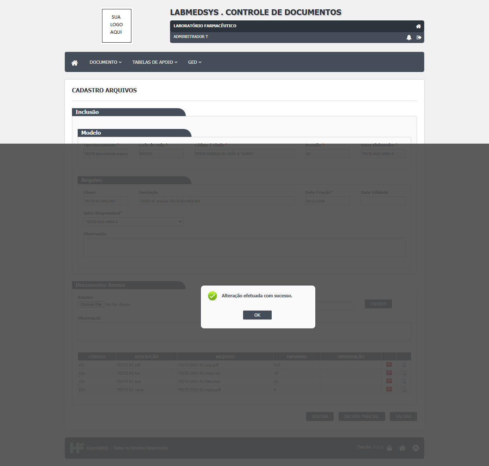
Figura 1: Salvar Parcial em arquivo concluído
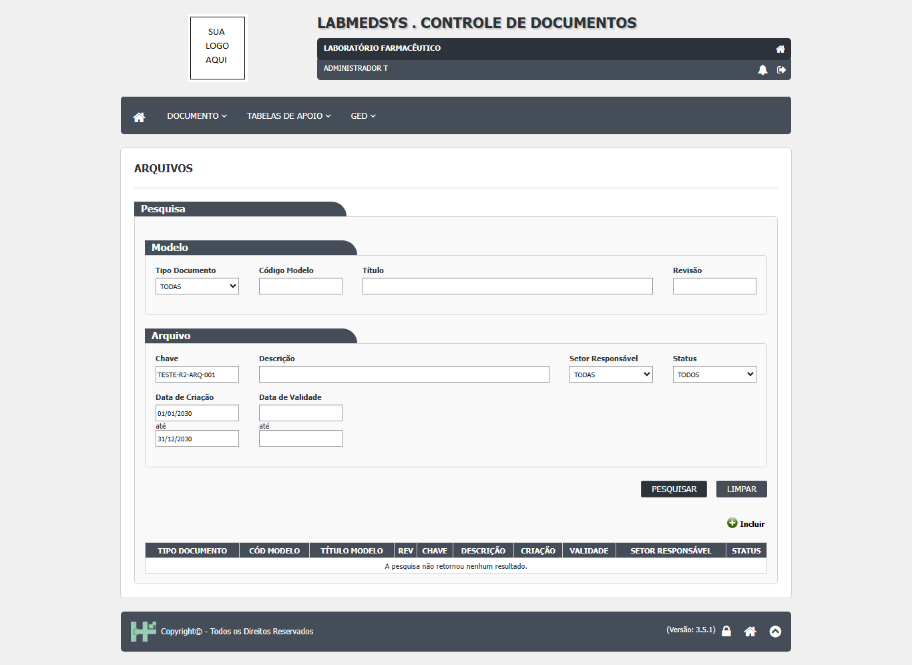
Figura 2: Filtros de Arquivos
Sugestão de correção
- Recusar edição de arquivo concluído; filtrar por parte da chave e por datas abertas; mostrar histórico.
Observações
A lista Modelos tem o ícone Log; a de Arquivos não.
DV-DOC-026
Ordenação da lista por Código e por Tipo não é coerente
| Gravidade | Situação | Tela | Caso de teste | Encontrado em | Norma afetada |
|---|---|---|---|---|---|
| Baixa | Aberto | Documento | CT-DOC-F-11 | 23/10/2026 (rodada 1 do Controle de Documentos) | Boa prática de usabilidade (sem norma específica) |
| Tipo: funcional · Já estava no portal: não |
O que acontece
Clicar no cabeçalho "Código" não ordena no primeiro clique ("", "revisão final", "", …) e, no segundo, ordena como número (1000, 200, 100, 2). "Tipo" não segue o código do tipo.
Como reproduzir
- Documento, Pesquisar, clicar no cabeçalho Código duas vezes.
Dados de teste usados: documentos TESTE da rodada 1 (ver massa-de-dados.md).
Esperado e obtido
| Esperado | Obtido |
|---|---|
| Ordem crescente e decrescente por texto. | Sem ordem / ordem numérica de texto. |
Evidências

Figura 1: Lista após ordenar
Sugestão de correção
- Ordenar pelo valor exibido.
Como confirmar a correção
Rodada 2, segunda continuação (03/11/2026): reproduziu em parte. O primeiro clique em Código já ordena os números, mas textos e vazios continuam misturados e o segundo clique inverte tudo.
DV-DOC-027
Descrição de tipo repetida é aceita; primeira situação aparece como "PRÉ INCLUSÃO"
| Gravidade | Situação | Tela | Caso de teste | Encontrado em | Norma afetada |
|---|---|---|---|---|---|
| Baixa | Aberto | Tipo de Documento, Documento | CT-DOC-040, N-13, N-14 | 23/10/2026 (rodada 1 do Controle de Documentos) | RDC 658/2022, art. 117 (tipos de documentos definidos) |
| Tipo: funcional · Já estava no portal: não |
O que acontece
Dois tipos com a mesma descrição e códigos diferentes foram aceitos. A situação inicial do documento aparece como "PRÉ INCLUSÃO", e as regras chamam de "Em inclusão".
Como reproduzir
- Incluir dois tipos com a mesma descrição.
Dados de teste usados: documentos TESTE da rodada 1 (ver massa-de-dados.md). Tipos TCOMP e TREP2.
Esperado e obtido
| Esperado | Obtido |
|---|---|
| Descrição única; nome de situação igual ao do fluxo. | Duplicidade aceita; nome diferente. |
Evidências
Figura 1: Descrição repetida aceita
Sugestão de correção
- Validar a descrição; padronizar os nomes das situações.
Como confirmar a correção
Rodada 2, segunda continuação (03/11/2026): reproduziu. Tipos TR2A e TR2B, mesma descrição e códigos diferentes, aceitos; gravados pelo envio do botão Salvar.